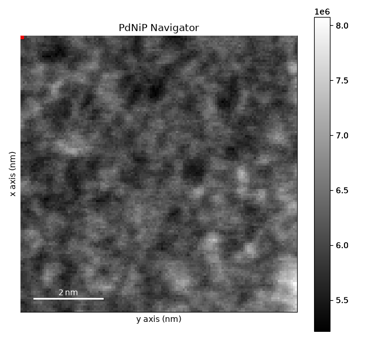
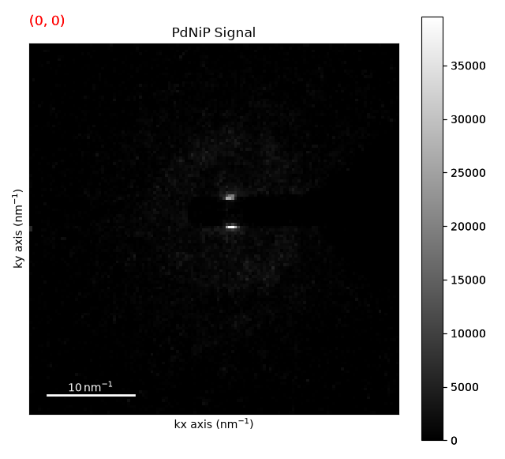
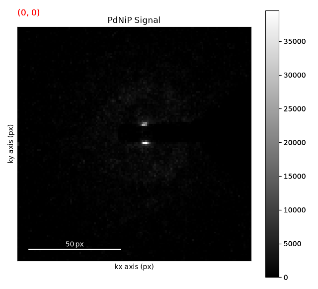
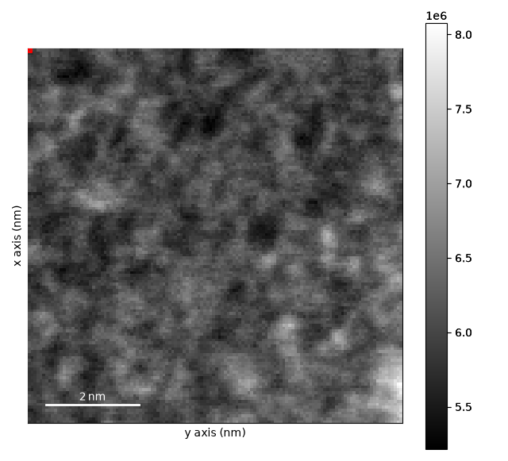
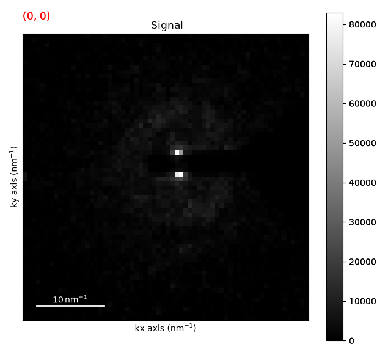

Note
Go to the end to download the full example code.
Flat Ewald’s Sphere Assumption#
In most cases, the Ewald’s sphere is assumed to be flat for diffraction patterns when doing 4D STEM. This is almost always a good assumption. That being said there are a couple of common units used with 4D STEM (e.g. nm-1, mrad, pixel coordinates) and it is important to understand how these units relate to each other. These units are also related to the camera length, pixel size, and beam energy (wavelength) of the microscope. In reality the beam energy is really the only thing that you need to know.
Let’s look at an example of this using the ZrNb Precipitate dataset.
from pyxem.data import pdnip_glass
g = pdnip_glass(allow_download=True)
g.calibration.beam_energy = "200 kV"
g.calibration.convergance_angle = "1 mrad" # set the convergence angle
0%| | 0.00/305M [00:00<?, ?B/s]
0%| | 12.3k/305M [00:00<43:24, 117kB/s]
0%| | 28.7k/305M [00:00<37:54, 134kB/s]
0%| | 94.2k/305M [00:00<14:52, 341kB/s]
0%| | 160k/305M [00:00<11:37, 437kB/s]
0%| | 225k/305M [00:00<10:22, 489kB/s]
0%| | 340k/305M [00:00<07:35, 667kB/s]
0%| | 463k/305M [00:00<06:18, 804kB/s]
0%| | 557k/305M [00:00<06:14, 812kB/s]
0%| | 672k/305M [00:01<05:47, 874kB/s]
0%| | 770k/305M [00:01<05:48, 872kB/s]
0%| | 860k/305M [00:01<05:58, 848kB/s]
0%|▏ | 999k/305M [00:01<05:15, 963kB/s]
0%|▏ | 1.16M/305M [00:01<04:36, 1.10MB/s]
0%|▏ | 1.27M/305M [00:01<04:46, 1.06MB/s]
0%|▏ | 1.38M/305M [00:01<04:56, 1.02MB/s]
0%|▏ | 1.48M/305M [00:01<05:06, 987kB/s]
1%|▏ | 1.59M/305M [00:01<05:11, 974kB/s]
1%|▏ | 1.70M/305M [00:02<05:07, 985kB/s]
1%|▏ | 1.82M/305M [00:02<05:05, 990kB/s]
1%|▏ | 1.95M/305M [00:02<04:51, 1.04MB/s]
1%|▎ | 2.06M/305M [00:02<05:00, 1.01MB/s]
1%|▎ | 2.16M/305M [00:02<05:09, 976kB/s]
1%|▎ | 2.42M/305M [00:02<03:37, 1.39MB/s]
1%|▎ | 2.59M/305M [00:02<03:34, 1.41MB/s]
1%|▎ | 2.73M/305M [00:02<03:41, 1.36MB/s]
1%|▎ | 2.87M/305M [00:02<03:48, 1.32MB/s]
1%|▍ | 3.01M/305M [00:03<03:54, 1.28MB/s]
1%|▍ | 3.14M/305M [00:03<04:02, 1.25MB/s]
1%|▍ | 3.26M/305M [00:03<04:09, 1.21MB/s]
1%|▍ | 3.39M/305M [00:03<04:17, 1.17MB/s]
1%|▍ | 3.51M/305M [00:03<04:25, 1.13MB/s]
1%|▍ | 3.62M/305M [00:03<04:34, 1.10MB/s]
1%|▍ | 3.73M/305M [00:03<04:43, 1.06MB/s]
1%|▍ | 3.84M/305M [00:03<04:53, 1.03MB/s]
1%|▌ | 3.94M/305M [00:04<06:29, 771kB/s]
1%|▌ | 4.16M/305M [00:04<04:47, 1.05MB/s]
1%|▌ | 4.29M/305M [00:04<04:39, 1.07MB/s]
1%|▌ | 4.41M/305M [00:04<04:41, 1.07MB/s]
1%|▌ | 4.53M/305M [00:04<04:37, 1.08MB/s]
2%|▌ | 4.84M/305M [00:04<03:13, 1.55MB/s]
2%|▌ | 5.01M/305M [00:04<03:17, 1.51MB/s]
2%|▋ | 5.16M/305M [00:04<03:23, 1.47MB/s]
2%|▋ | 5.31M/305M [00:04<03:29, 1.43MB/s]
2%|▋ | 5.46M/305M [00:05<03:35, 1.39MB/s]
2%|▋ | 5.60M/305M [00:05<03:40, 1.35MB/s]
2%|▋ | 5.74M/305M [00:05<03:47, 1.32MB/s]
2%|▋ | 5.88M/305M [00:05<03:53, 1.28MB/s]
2%|▋ | 6.01M/305M [00:05<03:59, 1.25MB/s]
2%|▊ | 6.20M/305M [00:05<03:36, 1.38MB/s]
2%|▊ | 6.34M/305M [00:05<03:43, 1.33MB/s]
2%|▊ | 6.48M/305M [00:05<03:51, 1.29MB/s]
2%|▊ | 6.68M/305M [00:06<03:27, 1.43MB/s]
2%|▊ | 6.82M/305M [00:06<03:33, 1.39MB/s]
2%|▊ | 6.97M/305M [00:06<03:40, 1.35MB/s]
2%|▉ | 7.10M/305M [00:06<03:48, 1.30MB/s]
2%|▉ | 7.26M/305M [00:06<03:42, 1.34MB/s]
2%|▉ | 7.46M/305M [00:06<03:24, 1.45MB/s]
3%|▉ | 7.70M/305M [00:06<02:58, 1.67MB/s]
3%|▉ | 7.93M/305M [00:06<02:47, 1.77MB/s]
3%|█ | 8.11M/305M [00:06<02:52, 1.72MB/s]
3%|█ | 8.29M/305M [00:07<02:59, 1.66MB/s]
3%|█ | 8.45M/305M [00:07<03:59, 1.24MB/s]
3%|█ | 8.59M/305M [00:07<04:00, 1.23MB/s]
3%|█ | 8.74M/305M [00:07<03:58, 1.24MB/s]
3%|█ | 8.87M/305M [00:07<04:00, 1.23MB/s]
3%|█▏ | 9.14M/305M [00:07<03:10, 1.55MB/s]
3%|█▏ | 9.31M/305M [00:07<03:14, 1.52MB/s]
3%|█▏ | 9.47M/305M [00:07<03:18, 1.49MB/s]
3%|█▏ | 9.62M/305M [00:08<03:24, 1.44MB/s]
3%|█▏ | 9.76M/305M [00:08<03:30, 1.40MB/s]
3%|█▏ | 9.91M/305M [00:08<03:36, 1.36MB/s]
3%|█▎ | 10.0M/305M [00:08<03:42, 1.32MB/s]
3%|█▎ | 10.2M/305M [00:08<03:49, 1.28MB/s]
3%|█▎ | 10.3M/305M [00:08<03:56, 1.25MB/s]
3%|█▎ | 10.4M/305M [00:08<04:03, 1.21MB/s]
3%|█▎ | 10.6M/305M [00:08<04:11, 1.17MB/s]
4%|█▎ | 10.7M/305M [00:08<04:19, 1.13MB/s]
4%|█▎ | 10.8M/305M [00:09<04:27, 1.10MB/s]
4%|█▎ | 10.9M/305M [00:09<04:38, 1.05MB/s]
4%|█▎ | 11.0M/305M [00:09<04:47, 1.02MB/s]
4%|█▍ | 11.1M/305M [00:09<04:39, 1.05MB/s]
4%|█▍ | 11.3M/305M [00:09<04:42, 1.04MB/s]
4%|█▍ | 11.4M/305M [00:09<04:33, 1.07MB/s]
4%|█▍ | 11.5M/305M [00:09<04:27, 1.10MB/s]
4%|█▍ | 11.6M/305M [00:09<04:36, 1.06MB/s]
4%|█▍ | 11.8M/305M [00:09<03:42, 1.32MB/s]
4%|█▍ | 12.0M/305M [00:10<03:49, 1.28MB/s]
4%|█▌ | 12.1M/305M [00:10<03:49, 1.27MB/s]
4%|█▌ | 12.3M/305M [00:10<03:33, 1.37MB/s]
4%|█▌ | 12.6M/305M [00:10<02:58, 1.64MB/s]
4%|█▌ | 12.7M/305M [00:10<02:59, 1.62MB/s]
4%|█▌ | 12.9M/305M [00:10<03:05, 1.57MB/s]
4%|█▋ | 13.2M/305M [00:10<02:46, 1.75MB/s]
4%|█▋ | 13.3M/305M [00:10<02:47, 1.74MB/s]
4%|█▋ | 13.5M/305M [00:11<02:52, 1.68MB/s]
4%|█▋ | 13.7M/305M [00:11<02:58, 1.63MB/s]
5%|█▋ | 13.9M/305M [00:11<03:04, 1.58MB/s]
5%|█▋ | 14.0M/305M [00:11<04:07, 1.18MB/s]
5%|█▊ | 14.2M/305M [00:11<03:53, 1.24MB/s]
5%|█▊ | 14.3M/305M [00:11<03:44, 1.30MB/s]
5%|█▊ | 14.5M/305M [00:11<03:47, 1.28MB/s]
5%|█▊ | 14.6M/305M [00:11<03:51, 1.25MB/s]
5%|█▊ | 14.8M/305M [00:12<03:41, 1.31MB/s]
5%|█▊ | 14.9M/305M [00:12<03:47, 1.27MB/s]
5%|█▉ | 15.1M/305M [00:12<05:01, 961kB/s]
5%|█▉ | 15.2M/305M [00:12<05:00, 964kB/s]
5%|█▉ | 15.3M/305M [00:12<04:56, 977kB/s]
5%|█▉ | 15.4M/305M [00:12<04:59, 966kB/s]
5%|█▉ | 15.6M/305M [00:12<04:18, 1.12MB/s]
5%|█▉ | 15.7M/305M [00:12<04:23, 1.10MB/s]
5%|█▉ | 15.8M/305M [00:13<04:29, 1.07MB/s]
5%|█▉ | 15.9M/305M [00:13<04:36, 1.04MB/s]
5%|█▉ | 16.0M/305M [00:13<04:44, 1.01MB/s]
5%|██ | 16.1M/305M [00:13<04:54, 980kB/s]
5%|██ | 16.3M/305M [00:13<04:06, 1.17MB/s]
5%|██ | 16.5M/305M [00:13<03:50, 1.25MB/s]
5%|██ | 16.6M/305M [00:13<03:57, 1.21MB/s]
5%|██ | 16.7M/305M [00:13<03:58, 1.21MB/s]
6%|██ | 16.8M/305M [00:13<04:05, 1.17MB/s]
6%|██ | 17.0M/305M [00:14<04:01, 1.19MB/s]
6%|██▏ | 17.1M/305M [00:14<04:08, 1.16MB/s]
6%|██▏ | 17.3M/305M [00:14<03:54, 1.22MB/s]
6%|██▏ | 17.4M/305M [00:14<03:58, 1.20MB/s]
6%|██▏ | 17.5M/305M [00:14<04:06, 1.17MB/s]
6%|██▏ | 17.6M/305M [00:14<04:13, 1.13MB/s]
6%|██▏ | 17.7M/305M [00:14<04:22, 1.09MB/s]
6%|██▏ | 18.0M/305M [00:14<03:26, 1.39MB/s]
6%|██▎ | 18.1M/305M [00:14<03:34, 1.34MB/s]
6%|██▎ | 18.3M/305M [00:15<03:41, 1.29MB/s]
6%|██▎ | 18.4M/305M [00:15<03:48, 1.25MB/s]
6%|██▎ | 18.6M/305M [00:15<03:07, 1.53MB/s]
6%|██▎ | 18.8M/305M [00:15<03:13, 1.48MB/s]
6%|██▎ | 18.9M/305M [00:15<03:18, 1.44MB/s]
6%|██▍ | 19.1M/305M [00:15<03:24, 1.40MB/s]
6%|██▍ | 19.3M/305M [00:15<03:20, 1.42MB/s]
6%|██▍ | 19.4M/305M [00:15<03:27, 1.37MB/s]
6%|██▍ | 19.5M/305M [00:15<03:34, 1.33MB/s]
6%|██▍ | 19.7M/305M [00:16<03:41, 1.29MB/s]
7%|██▍ | 19.8M/305M [00:16<03:47, 1.25MB/s]
7%|██▍ | 19.9M/305M [00:16<03:55, 1.21MB/s]
7%|██▌ | 20.2M/305M [00:16<03:05, 1.53MB/s]
7%|██▌ | 20.4M/305M [00:16<02:55, 1.62MB/s]
7%|██▌ | 20.6M/305M [00:16<03:01, 1.57MB/s]
7%|██▌ | 20.7M/305M [00:16<03:06, 1.52MB/s]
7%|██▌ | 20.9M/305M [00:16<03:12, 1.47MB/s]
7%|██▌ | 21.0M/305M [00:17<03:17, 1.43MB/s]
7%|██▋ | 21.2M/305M [00:17<03:23, 1.39MB/s]
7%|██▋ | 21.3M/305M [00:17<03:28, 1.36MB/s]
7%|██▋ | 21.5M/305M [00:17<03:34, 1.32MB/s]
7%|██▋ | 21.6M/305M [00:17<03:40, 1.28MB/s]
7%|██▋ | 21.8M/305M [00:17<03:07, 1.51MB/s]
7%|██▋ | 22.0M/305M [00:17<03:14, 1.45MB/s]
7%|██▊ | 22.2M/305M [00:17<03:04, 1.53MB/s]
7%|██▊ | 22.3M/305M [00:17<03:10, 1.48MB/s]
7%|██▊ | 22.5M/305M [00:18<04:14, 1.11MB/s]
7%|██▊ | 22.6M/305M [00:18<04:04, 1.15MB/s]
7%|██▊ | 22.8M/305M [00:18<04:04, 1.15MB/s]
8%|██▊ | 22.9M/305M [00:18<04:08, 1.13MB/s]
8%|██▊ | 23.0M/305M [00:18<04:13, 1.11MB/s]
8%|██▉ | 23.1M/305M [00:18<04:20, 1.08MB/s]
8%|██▉ | 23.2M/305M [00:18<04:27, 1.05MB/s]
8%|██▉ | 23.3M/305M [00:18<04:33, 1.03MB/s]
8%|██▉ | 23.4M/305M [00:19<04:40, 1.00MB/s]
8%|███ | 23.5M/305M [00:19<04:48, 973kB/s]
8%|███ | 23.6M/305M [00:19<04:57, 943kB/s]
8%|██▉ | 23.8M/305M [00:19<04:07, 1.14MB/s]
8%|██▉ | 24.0M/305M [00:19<03:33, 1.31MB/s]
8%|███ | 24.2M/305M [00:19<03:39, 1.28MB/s]
8%|███ | 24.3M/305M [00:19<04:53, 955kB/s]
8%|███ | 24.4M/305M [00:19<04:51, 961kB/s]
8%|███ | 24.7M/305M [00:20<03:17, 1.42MB/s]
8%|███ | 24.9M/305M [00:20<03:19, 1.40MB/s]
8%|███ | 25.0M/305M [00:20<03:14, 1.44MB/s]
8%|███▏ | 25.2M/305M [00:20<03:14, 1.44MB/s]
8%|███▏ | 25.4M/305M [00:20<03:13, 1.44MB/s]
8%|███▏ | 25.5M/305M [00:20<03:13, 1.44MB/s]
8%|███▏ | 25.7M/305M [00:20<03:19, 1.40MB/s]
8%|███▏ | 25.8M/305M [00:20<03:25, 1.36MB/s]
9%|███▏ | 25.9M/305M [00:21<04:33, 1.02MB/s]
9%|███▎ | 26.1M/305M [00:21<03:54, 1.19MB/s]
9%|███▎ | 26.4M/305M [00:21<02:58, 1.56MB/s]
9%|███▎ | 26.6M/305M [00:21<03:00, 1.54MB/s]
9%|███▎ | 26.8M/305M [00:21<03:02, 1.52MB/s]
9%|███▎ | 26.9M/305M [00:21<03:06, 1.49MB/s]
9%|███▍ | 27.1M/305M [00:21<03:10, 1.45MB/s]
9%|███▍ | 27.2M/305M [00:21<04:11, 1.10MB/s]
9%|███▍ | 27.4M/305M [00:22<04:04, 1.13MB/s]
9%|███▍ | 27.5M/305M [00:22<03:55, 1.18MB/s]
9%|███▍ | 27.7M/305M [00:22<03:58, 1.16MB/s]
9%|███▍ | 27.9M/305M [00:22<03:22, 1.37MB/s]
9%|███▍ | 28.0M/305M [00:22<03:26, 1.34MB/s]
9%|███▌ | 28.2M/305M [00:22<03:31, 1.30MB/s]
9%|███▌ | 28.3M/305M [00:22<03:37, 1.27MB/s]
9%|███▌ | 28.4M/305M [00:22<03:42, 1.24MB/s]
9%|███▌ | 28.5M/305M [00:23<03:49, 1.20MB/s]
9%|███▌ | 28.8M/305M [00:23<03:02, 1.51MB/s]
10%|███▌ | 29.0M/305M [00:23<03:07, 1.47MB/s]
10%|███▋ | 29.1M/305M [00:23<03:02, 1.51MB/s]
10%|███▋ | 29.3M/305M [00:23<02:55, 1.57MB/s]
10%|███▋ | 29.5M/305M [00:23<03:01, 1.52MB/s]
10%|███▋ | 29.7M/305M [00:23<04:01, 1.14MB/s]
10%|███▋ | 29.8M/305M [00:23<04:00, 1.14MB/s]
10%|███▋ | 30.0M/305M [00:24<03:28, 1.32MB/s]
10%|███▊ | 30.1M/305M [00:24<03:31, 1.30MB/s]
10%|███▊ | 30.3M/305M [00:24<03:34, 1.28MB/s]
10%|███▊ | 30.4M/305M [00:24<03:38, 1.25MB/s]
10%|███▊ | 30.5M/305M [00:24<03:43, 1.23MB/s]
10%|███▊ | 30.7M/305M [00:24<03:48, 1.20MB/s]
10%|███▊ | 30.8M/305M [00:24<03:55, 1.16MB/s]
10%|███▊ | 30.9M/305M [00:24<04:02, 1.13MB/s]
10%|███▉ | 31.0M/305M [00:25<05:23, 845kB/s]
10%|███▉ | 31.1M/305M [00:25<05:21, 850kB/s]
10%|███▉ | 31.7M/305M [00:25<02:25, 1.87MB/s]
10%|███▉ | 31.9M/305M [00:25<02:26, 1.86MB/s]
11%|████ | 32.1M/305M [00:25<02:28, 1.84MB/s]
11%|████ | 32.3M/305M [00:25<03:55, 1.15MB/s]
11%|████ | 32.5M/305M [00:25<03:25, 1.33MB/s]
11%|████ | 33.0M/305M [00:26<02:08, 2.11MB/s]
11%|████▏ | 33.3M/305M [00:26<02:05, 2.16MB/s]
11%|████▏ | 33.5M/305M [00:26<02:04, 2.18MB/s]
11%|████▏ | 33.8M/305M [00:26<03:11, 1.41MB/s]
11%|████▏ | 34.0M/305M [00:26<03:40, 1.23MB/s]
11%|████▎ | 34.1M/305M [00:26<03:34, 1.26MB/s]
11%|████▎ | 34.3M/305M [00:27<04:15, 1.06MB/s]
11%|████▎ | 34.4M/305M [00:27<04:10, 1.08MB/s]
11%|████▎ | 34.6M/305M [00:27<04:08, 1.09MB/s]
11%|████▎ | 34.7M/305M [00:27<04:08, 1.09MB/s]
11%|████▍ | 34.8M/305M [00:27<05:14, 857kB/s]
11%|████▍ | 34.9M/305M [00:27<04:54, 917kB/s]
12%|████▍ | 35.1M/305M [00:28<04:17, 1.05MB/s]
12%|████▍ | 35.2M/305M [00:28<04:20, 1.04MB/s]
12%|████▍ | 35.3M/305M [00:28<04:24, 1.02MB/s]
12%|████▍ | 35.4M/305M [00:28<04:27, 1.01MB/s]
12%|████▌ | 35.5M/305M [00:28<04:32, 989kB/s]
12%|████▌ | 35.6M/305M [00:28<04:41, 956kB/s]
12%|████▌ | 35.7M/305M [00:28<04:48, 931kB/s]
12%|████▌ | 35.8M/305M [00:28<04:58, 902kB/s]
12%|████▌ | 35.9M/305M [00:28<05:05, 880kB/s]
12%|████▌ | 36.0M/305M [00:29<05:06, 877kB/s]
12%|████▌ | 36.1M/305M [00:29<05:07, 874kB/s]
12%|████▌ | 36.3M/305M [00:29<04:17, 1.04MB/s]
12%|████▌ | 36.4M/305M [00:29<04:25, 1.01MB/s]
12%|████▋ | 36.5M/305M [00:29<04:34, 977kB/s]
12%|████▋ | 36.6M/305M [00:29<04:43, 944kB/s]
12%|████▌ | 36.8M/305M [00:29<03:44, 1.19MB/s]
12%|████▌ | 36.9M/305M [00:29<03:52, 1.15MB/s]
12%|████▌ | 37.0M/305M [00:29<03:59, 1.12MB/s]
12%|████▋ | 37.1M/305M [00:30<04:06, 1.09MB/s]
12%|████▊ | 37.3M/305M [00:30<05:29, 812kB/s]
12%|████▊ | 37.4M/305M [00:30<05:27, 815kB/s]
12%|████▊ | 37.5M/305M [00:30<04:46, 933kB/s]
12%|████▊ | 37.6M/305M [00:30<04:48, 924kB/s]
12%|████▊ | 37.7M/305M [00:30<04:32, 979kB/s]
12%|████▊ | 37.8M/305M [00:30<04:30, 986kB/s]
13%|████▊ | 38.1M/305M [00:30<03:20, 1.33MB/s]
13%|████▊ | 38.3M/305M [00:31<02:50, 1.56MB/s]
13%|████▊ | 38.5M/305M [00:31<02:54, 1.53MB/s]
13%|████▊ | 38.6M/305M [00:31<02:59, 1.48MB/s]
13%|████▊ | 38.8M/305M [00:31<03:05, 1.44MB/s]
13%|████▊ | 38.9M/305M [00:31<04:06, 1.08MB/s]
13%|████▊ | 39.1M/305M [00:31<03:59, 1.11MB/s]
13%|████▉ | 39.3M/305M [00:31<03:11, 1.38MB/s]
13%|████▉ | 39.5M/305M [00:31<03:04, 1.44MB/s]
13%|████▉ | 39.7M/305M [00:32<03:04, 1.44MB/s]
13%|████▉ | 39.8M/305M [00:32<03:07, 1.41MB/s]
13%|████▉ | 40.0M/305M [00:32<04:07, 1.07MB/s]
13%|█████ | 40.1M/305M [00:32<04:06, 1.07MB/s]
13%|█████ | 40.2M/305M [00:32<04:07, 1.07MB/s]
13%|█████▏ | 40.3M/305M [00:32<05:17, 831kB/s]
13%|█████ | 40.5M/305M [00:33<04:15, 1.03MB/s]
13%|█████ | 40.8M/305M [00:33<03:15, 1.35MB/s]
13%|█████ | 40.9M/305M [00:33<03:15, 1.35MB/s]
13%|█████ | 41.1M/305M [00:33<04:11, 1.05MB/s]
14%|█████▏ | 41.2M/305M [00:33<04:09, 1.06MB/s]
14%|█████▏ | 41.3M/305M [00:33<04:01, 1.09MB/s]
14%|█████▏ | 41.5M/305M [00:33<04:03, 1.08MB/s]
14%|█████▎ | 41.6M/305M [00:34<05:14, 835kB/s]
14%|█████▎ | 41.7M/305M [00:34<05:11, 843kB/s]
14%|█████▎ | 41.8M/305M [00:34<06:31, 672kB/s]
14%|█████▎ | 41.9M/305M [00:34<04:59, 877kB/s]
14%|█████▍ | 42.0M/305M [00:34<04:57, 882kB/s]
14%|█████▍ | 42.2M/305M [00:34<04:38, 943kB/s]
14%|█████▍ | 42.3M/305M [00:34<04:41, 932kB/s]
14%|█████▎ | 42.4M/305M [00:34<04:08, 1.05MB/s]
14%|█████▎ | 42.5M/305M [00:35<04:13, 1.03MB/s]
14%|█████▎ | 42.7M/305M [00:35<04:03, 1.08MB/s]
14%|█████▎ | 42.8M/305M [00:35<04:10, 1.05MB/s]
14%|█████▎ | 42.9M/305M [00:35<04:17, 1.01MB/s]
14%|█████▌ | 43.0M/305M [00:35<04:23, 992kB/s]
14%|█████▍ | 43.2M/305M [00:35<03:33, 1.22MB/s]
14%|█████▍ | 43.4M/305M [00:35<03:22, 1.29MB/s]
14%|█████▍ | 43.6M/305M [00:35<02:58, 1.46MB/s]
14%|█████▍ | 43.9M/305M [00:35<02:24, 1.80MB/s]
14%|█████▍ | 44.1M/305M [00:36<02:29, 1.75MB/s]
15%|█████▌ | 44.2M/305M [00:36<02:34, 1.69MB/s]
15%|█████▌ | 44.4M/305M [00:36<02:38, 1.64MB/s]
15%|█████▌ | 44.6M/305M [00:36<02:43, 1.59MB/s]
15%|█████▌ | 44.7M/305M [00:36<02:49, 1.54MB/s]
15%|█████▌ | 44.9M/305M [00:36<03:46, 1.15MB/s]
15%|█████▌ | 45.0M/305M [00:36<03:45, 1.15MB/s]
15%|█████▋ | 45.1M/305M [00:36<03:47, 1.14MB/s]
15%|█████▋ | 45.3M/305M [00:37<03:50, 1.13MB/s]
15%|█████▋ | 45.4M/305M [00:37<03:44, 1.16MB/s]
15%|█████▋ | 45.7M/305M [00:37<02:59, 1.44MB/s]
15%|█████▋ | 45.8M/305M [00:37<02:54, 1.49MB/s]
15%|█████▋ | 46.0M/305M [00:37<02:55, 1.47MB/s]
15%|█████▊ | 46.2M/305M [00:37<02:56, 1.46MB/s]
15%|█████▊ | 46.3M/305M [00:37<03:01, 1.43MB/s]
15%|█████▊ | 46.5M/305M [00:37<03:06, 1.38MB/s]
15%|█████▊ | 46.6M/305M [00:37<03:12, 1.34MB/s]
15%|█████▊ | 46.8M/305M [00:38<02:52, 1.50MB/s]
15%|█████▊ | 47.0M/305M [00:38<02:57, 1.45MB/s]
15%|█████▉ | 47.1M/305M [00:38<03:57, 1.08MB/s]
16%|█████▉ | 47.2M/305M [00:38<03:57, 1.08MB/s]
16%|██████ | 47.4M/305M [00:38<05:01, 853kB/s]
16%|██████ | 47.5M/305M [00:38<05:00, 857kB/s]
16%|██████ | 47.6M/305M [00:39<04:58, 860kB/s]
16%|██████ | 47.7M/305M [00:39<04:34, 937kB/s]
16%|██████ | 47.8M/305M [00:39<04:28, 957kB/s]
16%|█████▉ | 47.9M/305M [00:39<04:13, 1.01MB/s]
16%|██████ | 48.1M/305M [00:39<03:38, 1.18MB/s]
16%|██████ | 48.2M/305M [00:39<03:42, 1.15MB/s]
16%|██████▏ | 48.3M/305M [00:39<04:55, 869kB/s]
16%|██████▏ | 48.4M/305M [00:39<04:54, 869kB/s]
16%|██████▏ | 48.5M/305M [00:40<06:10, 691kB/s]
16%|██████▏ | 49.3M/305M [00:40<02:09, 1.98MB/s]
16%|██████▏ | 49.5M/305M [00:40<03:07, 1.36MB/s]
16%|██████▏ | 49.7M/305M [00:40<02:58, 1.43MB/s]
16%|██████▏ | 49.9M/305M [00:40<02:51, 1.48MB/s]
16%|██████▏ | 50.1M/305M [00:41<03:26, 1.23MB/s]
16%|██████▎ | 50.2M/305M [00:41<04:06, 1.03MB/s]
17%|██████▎ | 50.4M/305M [00:41<04:01, 1.05MB/s]
17%|██████▎ | 50.5M/305M [00:41<04:00, 1.06MB/s]
17%|██████▎ | 50.6M/305M [00:41<04:00, 1.06MB/s]
17%|██████▎ | 50.7M/305M [00:41<04:03, 1.04MB/s]
17%|██████▎ | 50.8M/305M [00:41<04:07, 1.03MB/s]
17%|██████▎ | 50.9M/305M [00:41<04:13, 1.00MB/s]
17%|██████▌ | 51.0M/305M [00:42<04:17, 985kB/s]
17%|██████▌ | 51.1M/305M [00:42<04:23, 962kB/s]
17%|██████▌ | 51.2M/305M [00:42<04:31, 934kB/s]
17%|██████▌ | 51.3M/305M [00:42<04:40, 903kB/s]
17%|██████▌ | 51.4M/305M [00:42<04:47, 882kB/s]
17%|██████▌ | 51.5M/305M [00:42<04:52, 866kB/s]
17%|██████▌ | 51.6M/305M [00:42<04:52, 866kB/s]
17%|██████▌ | 51.7M/305M [00:42<04:52, 866kB/s]
17%|██████▋ | 51.8M/305M [00:42<04:51, 866kB/s]
17%|██████▍ | 52.1M/305M [00:43<03:21, 1.25MB/s]
17%|██████▌ | 52.2M/305M [00:43<03:28, 1.21MB/s]
17%|██████▌ | 52.3M/305M [00:43<03:34, 1.18MB/s]
17%|██████▌ | 52.4M/305M [00:43<03:41, 1.14MB/s]
17%|██████▌ | 52.5M/305M [00:43<03:49, 1.10MB/s]
17%|██████▌ | 52.7M/305M [00:43<03:56, 1.06MB/s]
17%|██████▌ | 52.8M/305M [00:43<04:05, 1.03MB/s]
17%|██████▌ | 52.9M/305M [00:43<03:46, 1.11MB/s]
17%|██████▌ | 53.0M/305M [00:43<03:52, 1.08MB/s]
17%|██████▋ | 53.1M/305M [00:44<03:59, 1.05MB/s]
17%|██████▋ | 53.2M/305M [00:44<04:07, 1.02MB/s]
18%|██████▋ | 53.5M/305M [00:44<03:11, 1.31MB/s]
18%|██████▋ | 53.6M/305M [00:44<03:19, 1.26MB/s]
18%|██████▋ | 53.7M/305M [00:44<03:26, 1.22MB/s]
18%|██████▋ | 53.9M/305M [00:44<03:33, 1.18MB/s]
18%|██████▉ | 54.0M/305M [00:44<04:45, 877kB/s]
18%|██████▉ | 54.1M/305M [00:45<04:47, 872kB/s]
18%|██████▉ | 54.2M/305M [00:45<04:47, 871kB/s]
18%|██████▉ | 54.3M/305M [00:45<04:51, 860kB/s]
18%|██████▉ | 54.4M/305M [00:45<04:54, 851kB/s]
18%|██████▉ | 54.5M/305M [00:45<04:53, 853kB/s]
18%|██████▊ | 54.6M/305M [00:45<04:04, 1.02MB/s]
18%|███████ | 54.7M/305M [00:45<04:10, 998kB/s]
18%|██████▊ | 54.8M/305M [00:45<04:04, 1.02MB/s]
18%|██████▊ | 55.0M/305M [00:45<03:37, 1.15MB/s]
18%|██████▉ | 55.1M/305M [00:46<03:43, 1.12MB/s]
18%|██████▉ | 55.2M/305M [00:46<03:49, 1.09MB/s]
18%|██████▉ | 55.4M/305M [00:46<03:56, 1.05MB/s]
18%|██████▉ | 55.5M/305M [00:46<04:01, 1.03MB/s]
18%|██████▉ | 55.6M/305M [00:46<03:53, 1.07MB/s]
18%|██████▉ | 55.7M/305M [00:46<03:56, 1.05MB/s]
18%|██████▉ | 55.9M/305M [00:46<03:18, 1.25MB/s]
18%|███████ | 56.1M/305M [00:46<02:47, 1.48MB/s]
18%|███████ | 56.3M/305M [00:46<02:52, 1.44MB/s]
19%|███████ | 56.4M/305M [00:47<02:57, 1.40MB/s]
19%|███████ | 56.6M/305M [00:47<02:56, 1.40MB/s]
19%|███████ | 56.7M/305M [00:47<03:02, 1.36MB/s]
19%|███████ | 56.9M/305M [00:47<04:03, 1.02MB/s]
19%|███████ | 57.0M/305M [00:47<04:03, 1.02MB/s]
19%|███████ | 57.1M/305M [00:47<04:05, 1.01MB/s]
19%|███████▎ | 57.2M/305M [00:47<04:10, 986kB/s]
19%|███████▏ | 57.4M/305M [00:47<03:39, 1.13MB/s]
19%|███████▏ | 57.7M/305M [00:48<02:43, 1.51MB/s]
19%|███████▏ | 57.9M/305M [00:48<02:36, 1.57MB/s]
19%|███████▏ | 58.0M/305M [00:48<02:40, 1.53MB/s]
19%|███████▎ | 58.2M/305M [00:48<02:46, 1.48MB/s]
19%|███████▎ | 58.3M/305M [00:48<03:41, 1.11MB/s]
19%|███████▎ | 58.5M/305M [00:48<03:07, 1.31MB/s]
19%|███████▎ | 58.7M/305M [00:48<03:03, 1.34MB/s]
19%|███████▎ | 58.9M/305M [00:48<03:04, 1.33MB/s]
19%|███████▎ | 59.0M/305M [00:49<03:07, 1.31MB/s]
19%|███████▍ | 59.1M/305M [00:49<03:10, 1.29MB/s]
19%|███████▍ | 59.3M/305M [00:49<03:14, 1.26MB/s]
19%|███████▍ | 59.4M/305M [00:49<03:19, 1.23MB/s]
20%|███████▍ | 59.5M/305M [00:49<03:25, 1.19MB/s]
20%|███████▍ | 59.7M/305M [00:49<03:30, 1.16MB/s]
20%|███████▍ | 59.8M/305M [00:49<03:36, 1.13MB/s]
20%|███████▍ | 59.9M/305M [00:49<03:43, 1.10MB/s]
20%|███████▍ | 60.0M/305M [00:50<03:50, 1.06MB/s]
20%|███████▌ | 60.3M/305M [00:50<02:50, 1.44MB/s]
20%|███████▌ | 60.4M/305M [00:50<02:55, 1.39MB/s]
20%|███████▌ | 60.5M/305M [00:50<03:00, 1.35MB/s]
20%|███████▌ | 60.7M/305M [00:50<04:00, 1.01MB/s]
20%|███████▌ | 60.9M/305M [00:50<03:25, 1.18MB/s]
20%|███████▌ | 61.0M/305M [00:50<03:55, 1.04MB/s]
20%|███████▊ | 61.1M/305M [00:51<04:54, 827kB/s]
20%|███████▊ | 61.2M/305M [00:51<04:50, 837kB/s]
20%|███████▊ | 61.3M/305M [00:51<04:51, 836kB/s]
20%|███████▊ | 61.4M/305M [00:51<04:54, 826kB/s]
20%|███████▋ | 61.7M/305M [00:51<03:18, 1.22MB/s]
20%|███████▋ | 61.8M/305M [00:51<03:21, 1.20MB/s]
20%|███████▋ | 61.9M/305M [00:51<03:25, 1.18MB/s]
20%|███████▊ | 62.1M/305M [00:51<02:54, 1.39MB/s]
20%|███████▊ | 62.3M/305M [00:51<02:52, 1.40MB/s]
21%|███████▊ | 62.5M/305M [00:52<02:57, 1.36MB/s]
21%|███████▊ | 62.6M/305M [00:52<03:56, 1.02MB/s]
21%|████████ | 62.7M/305M [00:52<04:52, 827kB/s]
21%|████████ | 62.8M/305M [00:52<04:49, 836kB/s]
21%|████████ | 62.9M/305M [00:52<04:50, 832kB/s]
21%|████████ | 63.0M/305M [00:52<04:53, 823kB/s]
21%|████████ | 63.1M/305M [00:53<04:36, 874kB/s]
21%|████████ | 63.2M/305M [00:53<04:36, 873kB/s]
21%|████████ | 63.3M/305M [00:53<04:43, 852kB/s]
21%|████████ | 63.4M/305M [00:53<04:48, 835kB/s]
21%|████████▏ | 63.5M/305M [00:53<04:56, 814kB/s]
21%|████████▏ | 63.6M/305M [00:53<04:54, 819kB/s]
21%|████████▏ | 63.7M/305M [00:53<04:49, 832kB/s]
21%|████████▏ | 63.8M/305M [00:53<04:07, 971kB/s]
21%|███████▉ | 63.9M/305M [00:53<03:54, 1.03MB/s]
21%|███████▉ | 64.0M/305M [00:54<04:00, 1.00MB/s]
21%|████████ | 64.3M/305M [00:54<03:01, 1.33MB/s]
21%|████████ | 64.4M/305M [00:54<03:06, 1.29MB/s]
21%|████████ | 64.6M/305M [00:54<03:12, 1.25MB/s]
21%|████████ | 64.7M/305M [00:54<03:19, 1.21MB/s]
21%|████████ | 64.8M/305M [00:54<03:25, 1.17MB/s]
21%|████████ | 64.9M/305M [00:54<03:33, 1.12MB/s]
21%|████████▎ | 65.0M/305M [00:54<04:44, 842kB/s]
21%|████████▎ | 65.1M/305M [00:55<04:45, 838kB/s]
21%|████████▎ | 65.3M/305M [00:55<04:17, 931kB/s]
21%|████████▎ | 65.4M/305M [00:55<04:19, 923kB/s]
22%|████████▏ | 65.7M/305M [00:55<02:48, 1.42MB/s]
22%|████████▏ | 65.8M/305M [00:55<02:47, 1.43MB/s]
22%|████████▏ | 66.0M/305M [00:55<02:37, 1.52MB/s]
22%|████████▎ | 66.2M/305M [00:55<02:42, 1.47MB/s]
22%|████████▎ | 66.3M/305M [00:55<03:35, 1.11MB/s]
22%|████████▎ | 66.5M/305M [00:56<03:34, 1.11MB/s]
22%|████████▎ | 66.6M/305M [00:56<03:35, 1.10MB/s]
22%|████████▎ | 66.7M/305M [00:56<03:39, 1.08MB/s]
22%|████████▎ | 66.9M/305M [00:56<03:29, 1.14MB/s]
22%|████████▎ | 67.0M/305M [00:56<03:33, 1.11MB/s]
22%|████████▎ | 67.1M/305M [00:56<03:39, 1.08MB/s]
22%|████████▍ | 67.3M/305M [00:56<03:09, 1.25MB/s]
22%|████████▍ | 67.4M/305M [00:56<03:13, 1.22MB/s]
22%|████████▍ | 67.5M/305M [00:56<03:18, 1.19MB/s]
22%|████████▍ | 67.8M/305M [00:57<02:38, 1.49MB/s]
22%|████████▍ | 67.9M/305M [00:57<02:43, 1.45MB/s]
22%|████████▍ | 68.1M/305M [00:57<02:49, 1.40MB/s]
22%|████████▌ | 68.2M/305M [00:57<03:45, 1.05MB/s]
22%|████████▋ | 68.3M/305M [00:57<04:40, 841kB/s]
22%|████████▊ | 68.4M/305M [00:57<04:39, 846kB/s]
23%|████████▊ | 68.5M/305M [00:58<04:37, 850kB/s]
23%|████████▌ | 68.7M/305M [00:58<03:41, 1.07MB/s]
23%|████████▌ | 68.9M/305M [00:58<03:43, 1.06MB/s]
23%|████████▌ | 69.0M/305M [00:58<03:45, 1.04MB/s]
23%|████████▌ | 69.1M/305M [00:58<03:50, 1.02MB/s]
23%|████████▋ | 69.2M/305M [00:58<03:55, 1.00MB/s]
23%|████████▊ | 69.3M/305M [00:58<04:02, 972kB/s]
23%|████████▉ | 69.4M/305M [00:58<05:18, 737kB/s]
23%|████████▉ | 69.5M/305M [00:59<05:08, 761kB/s]
23%|████████▉ | 69.6M/305M [00:59<04:59, 786kB/s]
23%|████████▉ | 69.7M/305M [00:59<04:50, 808kB/s]
23%|████████▉ | 69.8M/305M [00:59<04:45, 824kB/s]
23%|████████▉ | 69.9M/305M [00:59<04:41, 835kB/s]
23%|████████▋ | 70.1M/305M [00:59<03:19, 1.18MB/s]
23%|████████▊ | 70.2M/305M [00:59<03:24, 1.15MB/s]
23%|████████▊ | 70.4M/305M [00:59<03:06, 1.26MB/s]
23%|████████▊ | 70.6M/305M [00:59<02:33, 1.53MB/s]
23%|████████▊ | 70.8M/305M [01:00<02:37, 1.48MB/s]
23%|████████▊ | 71.0M/305M [01:00<03:30, 1.11MB/s]
23%|████████▊ | 71.1M/305M [01:00<03:30, 1.11MB/s]
23%|████████▉ | 71.2M/305M [01:00<03:32, 1.10MB/s]
23%|████████▉ | 71.3M/305M [01:00<03:34, 1.09MB/s]
23%|████████▉ | 71.4M/305M [01:00<03:38, 1.07MB/s]
23%|████████▉ | 71.5M/305M [01:00<03:44, 1.04MB/s]
24%|████████▉ | 71.7M/305M [01:00<03:15, 1.19MB/s]
24%|████████▉ | 71.9M/305M [01:01<03:17, 1.18MB/s]
24%|████████▉ | 72.0M/305M [01:01<03:22, 1.15MB/s]
24%|████████▉ | 72.1M/305M [01:01<03:27, 1.12MB/s]
24%|█████████ | 72.2M/305M [01:01<03:33, 1.09MB/s]
24%|█████████ | 72.3M/305M [01:01<03:40, 1.05MB/s]
24%|█████████ | 72.4M/305M [01:01<03:47, 1.02MB/s]
24%|█████████▎ | 72.5M/305M [01:01<03:55, 986kB/s]
24%|█████████▎ | 72.6M/305M [01:01<04:02, 956kB/s]
24%|█████████▎ | 72.7M/305M [01:01<04:09, 930kB/s]
24%|█████████▎ | 72.8M/305M [01:02<04:17, 901kB/s]
24%|█████████▎ | 72.9M/305M [01:02<04:26, 870kB/s]
24%|█████████▎ | 73.0M/305M [01:02<04:32, 849kB/s]
24%|█████████▎ | 73.1M/305M [01:02<04:34, 843kB/s]
24%|█████████▎ | 73.2M/305M [01:02<04:31, 851kB/s]
24%|█████████▍ | 73.3M/305M [01:02<03:54, 986kB/s]
24%|█████████▍ | 73.4M/305M [01:02<04:01, 957kB/s]
24%|█████████▍ | 73.5M/305M [01:02<04:08, 929kB/s]
24%|█████████▍ | 73.6M/305M [01:03<04:16, 899kB/s]
24%|█████████▏ | 73.8M/305M [01:03<03:48, 1.01MB/s]
24%|█████████▍ | 73.9M/305M [01:03<03:55, 978kB/s]
24%|█████████▍ | 74.0M/305M [01:03<04:03, 946kB/s]
24%|█████████▍ | 74.1M/305M [01:03<04:10, 922kB/s]
24%|█████████▍ | 74.2M/305M [01:03<04:17, 894kB/s]
24%|█████████▎ | 74.3M/305M [01:03<03:37, 1.06MB/s]
24%|█████████▎ | 74.5M/305M [01:03<03:31, 1.09MB/s]
24%|█████████▎ | 74.6M/305M [01:03<03:38, 1.05MB/s]
25%|█████████▎ | 74.7M/305M [01:04<03:45, 1.02MB/s]
25%|█████████▌ | 74.8M/305M [01:04<03:53, 986kB/s]
25%|█████████▌ | 74.9M/305M [01:04<05:10, 740kB/s]
25%|█████████▌ | 75.0M/305M [01:04<05:08, 745kB/s]
25%|█████████▌ | 75.1M/305M [01:04<05:10, 740kB/s]
25%|█████████▌ | 75.2M/305M [01:04<04:56, 775kB/s]
25%|█████████▋ | 75.3M/305M [01:04<04:46, 801kB/s]
25%|█████████▋ | 75.4M/305M [01:04<03:52, 985kB/s]
25%|█████████▋ | 75.5M/305M [01:05<03:58, 961kB/s]
25%|█████████▋ | 75.6M/305M [01:05<04:05, 934kB/s]
25%|█████████▋ | 75.7M/305M [01:05<04:10, 913kB/s]
25%|█████████▋ | 75.8M/305M [01:05<04:17, 890kB/s]
25%|█████████▋ | 75.9M/305M [01:05<04:25, 861kB/s]
25%|█████████▋ | 76.0M/305M [01:05<04:08, 918kB/s]
25%|█████████▌ | 76.3M/305M [01:05<03:02, 1.25MB/s]
25%|█████████▌ | 76.4M/305M [01:05<03:08, 1.21MB/s]
25%|█████████▌ | 76.5M/305M [01:05<03:15, 1.17MB/s]
25%|█████████▌ | 76.6M/305M [01:06<03:21, 1.13MB/s]
25%|█████████▌ | 76.7M/305M [01:06<03:28, 1.10MB/s]
25%|█████████▌ | 76.8M/305M [01:06<03:34, 1.06MB/s]
25%|█████████▌ | 77.0M/305M [01:06<03:01, 1.25MB/s]
25%|█████████▋ | 77.3M/305M [01:06<02:33, 1.48MB/s]
25%|█████████▋ | 77.4M/305M [01:06<02:38, 1.44MB/s]
25%|█████████▋ | 77.6M/305M [01:06<03:31, 1.08MB/s]
26%|█████████▋ | 77.7M/305M [01:06<03:31, 1.07MB/s]
26%|█████████▋ | 77.8M/305M [01:07<03:32, 1.07MB/s]
26%|█████████▋ | 78.0M/305M [01:07<03:08, 1.20MB/s]
26%|█████████▋ | 78.1M/305M [01:07<03:10, 1.19MB/s]
26%|█████████▊ | 78.2M/305M [01:07<03:15, 1.16MB/s]
26%|█████████▊ | 78.4M/305M [01:07<02:48, 1.34MB/s]
26%|█████████▊ | 78.6M/305M [01:07<02:52, 1.31MB/s]
26%|█████████▊ | 78.7M/305M [01:07<02:57, 1.27MB/s]
26%|█████████▊ | 78.9M/305M [01:07<03:00, 1.25MB/s]
26%|█████████▊ | 79.1M/305M [01:07<02:27, 1.52MB/s]
26%|█████████▉ | 79.3M/305M [01:08<02:32, 1.48MB/s]
26%|█████████▉ | 79.4M/305M [01:08<03:23, 1.11MB/s]
26%|██████████▏ | 79.5M/305M [01:08<04:12, 892kB/s]
26%|██████████▏ | 79.6M/305M [01:08<04:09, 903kB/s]
26%|██████████▏ | 79.7M/305M [01:08<04:08, 904kB/s]
26%|██████████▏ | 79.8M/305M [01:08<04:11, 895kB/s]
26%|██████████▏ | 79.9M/305M [01:09<04:12, 888kB/s]
26%|██████████▎ | 80.1M/305M [01:09<03:48, 984kB/s]
26%|██████████▎ | 80.2M/305M [01:09<03:53, 962kB/s]
26%|██████████▎ | 80.3M/305M [01:09<03:59, 935kB/s]
26%|██████████▎ | 80.4M/305M [01:09<04:04, 916kB/s]
26%|██████████ | 80.5M/305M [01:09<03:39, 1.02MB/s]
26%|██████████▎ | 80.6M/305M [01:09<03:44, 996kB/s]
27%|██████████▎ | 80.7M/305M [01:09<03:51, 968kB/s]
27%|██████████▎ | 80.8M/305M [01:09<03:58, 938kB/s]
27%|██████████▎ | 80.9M/305M [01:10<04:07, 906kB/s]
27%|██████████▍ | 81.0M/305M [01:10<03:53, 956kB/s]
27%|██████████▍ | 81.2M/305M [01:10<03:49, 974kB/s]
27%|██████████▍ | 81.3M/305M [01:10<03:56, 943kB/s]
27%|██████████▏ | 81.4M/305M [01:10<03:32, 1.05MB/s]
27%|██████████▏ | 81.5M/305M [01:10<03:26, 1.08MB/s]
27%|██████████▏ | 81.7M/305M [01:10<03:30, 1.06MB/s]
27%|██████████▏ | 81.8M/305M [01:10<03:16, 1.13MB/s]
27%|██████████▏ | 81.9M/305M [01:10<03:23, 1.10MB/s]
27%|██████████▏ | 82.1M/305M [01:11<03:13, 1.15MB/s]
27%|██████████▎ | 82.3M/305M [01:11<02:37, 1.41MB/s]
27%|██████████▎ | 82.5M/305M [01:11<02:15, 1.64MB/s]
27%|██████████▎ | 82.7M/305M [01:11<02:20, 1.58MB/s]
27%|██████████▎ | 82.9M/305M [01:11<02:25, 1.53MB/s]
27%|██████████▎ | 83.0M/305M [01:11<03:14, 1.14MB/s]
27%|██████████▍ | 83.3M/305M [01:11<02:35, 1.42MB/s]
27%|██████████▍ | 83.4M/305M [01:11<02:34, 1.43MB/s]
27%|██████████▍ | 83.6M/305M [01:12<02:36, 1.41MB/s]
27%|██████████▍ | 83.7M/305M [01:12<02:38, 1.39MB/s]
28%|██████████▋ | 83.9M/305M [01:12<04:13, 871kB/s]
28%|██████████▊ | 84.0M/305M [01:12<04:55, 747kB/s]
28%|██████████▊ | 84.1M/305M [01:12<04:46, 771kB/s]
28%|██████████▊ | 84.2M/305M [01:12<04:38, 792kB/s]
28%|██████████▊ | 84.3M/305M [01:13<04:32, 810kB/s]
28%|██████████▊ | 84.4M/305M [01:13<03:55, 934kB/s]
28%|██████████▊ | 84.5M/305M [01:13<03:57, 926kB/s]
28%|██████████▊ | 84.6M/305M [01:13<04:01, 910kB/s]
28%|██████████▊ | 84.7M/305M [01:13<04:05, 897kB/s]
28%|██████████▊ | 84.8M/305M [01:13<04:10, 878kB/s]
28%|██████████▊ | 84.9M/305M [01:13<04:11, 875kB/s]
28%|██████████▉ | 85.1M/305M [01:13<03:49, 958kB/s]
28%|██████████▉ | 85.2M/305M [01:13<03:55, 931kB/s]
28%|██████████▉ | 85.3M/305M [01:14<04:03, 902kB/s]
28%|██████████▉ | 85.4M/305M [01:14<04:08, 882kB/s]
28%|██████████▉ | 85.4M/305M [01:14<04:15, 856kB/s]
28%|██████████▉ | 85.5M/305M [01:14<04:24, 828kB/s]
28%|██████████▉ | 85.6M/305M [01:14<04:24, 829kB/s]
28%|██████████▉ | 85.7M/305M [01:14<04:20, 840kB/s]
28%|██████████▋ | 86.0M/305M [01:14<02:50, 1.28MB/s]
28%|██████████▊ | 86.2M/305M [01:14<02:22, 1.54MB/s]
28%|██████████▊ | 86.4M/305M [01:15<02:27, 1.48MB/s]
28%|██████████▊ | 86.5M/305M [01:15<02:31, 1.44MB/s]
28%|██████████▊ | 86.7M/305M [01:15<02:21, 1.54MB/s]
29%|██████████▊ | 87.0M/305M [01:15<02:05, 1.73MB/s]
29%|██████████▊ | 87.2M/305M [01:15<02:09, 1.67MB/s]
29%|██████████▉ | 87.3M/305M [01:15<02:14, 1.62MB/s]
29%|██████████▉ | 87.5M/305M [01:15<03:00, 1.21MB/s]
29%|███████████▏ | 87.6M/305M [01:16<03:44, 965kB/s]
29%|███████████▏ | 87.7M/305M [01:16<04:31, 800kB/s]
29%|███████████▏ | 87.8M/305M [01:16<04:28, 807kB/s]
29%|███████████▎ | 87.9M/305M [01:16<04:26, 813kB/s]
29%|███████████▎ | 88.0M/305M [01:16<05:33, 650kB/s]
29%|███████████▎ | 88.1M/305M [01:16<05:28, 659kB/s]
29%|███████████▎ | 88.2M/305M [01:16<04:41, 770kB/s]
29%|███████████▎ | 88.3M/305M [01:17<04:32, 794kB/s]
29%|███████████▎ | 88.5M/305M [01:17<04:02, 891kB/s]
29%|███████████▎ | 88.6M/305M [01:17<04:04, 884kB/s]
29%|███████████▎ | 88.6M/305M [01:17<04:05, 879kB/s]
29%|███████████ | 88.9M/305M [01:17<02:36, 1.37MB/s]
29%|███████████ | 89.1M/305M [01:17<02:40, 1.34MB/s]
29%|███████████▏ | 89.2M/305M [01:17<02:44, 1.31MB/s]
29%|███████████▍ | 89.4M/305M [01:17<03:38, 985kB/s]
29%|███████████▍ | 89.5M/305M [01:18<03:36, 993kB/s]
29%|███████████▍ | 89.6M/305M [01:18<03:37, 989kB/s]
29%|███████████▍ | 89.7M/305M [01:18<03:40, 975kB/s]
29%|███████████▍ | 89.8M/305M [01:18<03:44, 956kB/s]
30%|███████████▌ | 89.9M/305M [01:18<03:48, 939kB/s]
30%|███████████▌ | 90.0M/305M [01:18<03:53, 920kB/s]
30%|███████████▌ | 90.1M/305M [01:18<05:09, 693kB/s]
30%|███████████▌ | 90.2M/305M [01:18<05:09, 692kB/s]
30%|███████████▌ | 90.2M/305M [01:19<05:10, 691kB/s]
30%|███████████▌ | 90.3M/305M [01:19<05:14, 681kB/s]
30%|███████████▌ | 90.4M/305M [01:19<05:00, 713kB/s]
30%|███████████▌ | 90.5M/305M [01:19<04:42, 757kB/s]
30%|███████████▌ | 90.6M/305M [01:19<04:31, 789kB/s]
30%|███████████▌ | 90.7M/305M [01:19<04:23, 812kB/s]
30%|███████████▋ | 90.9M/305M [01:19<03:43, 956kB/s]
30%|███████████▋ | 91.0M/305M [01:19<03:49, 930kB/s]
30%|███████████▋ | 91.1M/305M [01:19<03:46, 944kB/s]
30%|███████████▋ | 91.2M/305M [01:20<03:51, 921kB/s]
30%|███████████▍ | 91.3M/305M [01:20<03:17, 1.08MB/s]
30%|███████████▍ | 91.4M/305M [01:20<03:23, 1.05MB/s]
30%|███████████▍ | 91.7M/305M [01:20<02:43, 1.31MB/s]
30%|███████████▍ | 91.8M/305M [01:20<02:48, 1.26MB/s]
30%|███████████▍ | 91.9M/305M [01:20<02:54, 1.22MB/s]
30%|███████████▍ | 92.0M/305M [01:20<03:00, 1.18MB/s]
30%|███████████▊ | 92.2M/305M [01:21<04:02, 878kB/s]
30%|███████████▊ | 92.3M/305M [01:21<04:00, 884kB/s]
30%|███████████▌ | 92.5M/305M [01:21<02:42, 1.30MB/s]
30%|███████████▌ | 92.7M/305M [01:21<02:43, 1.29MB/s]
30%|███████████▌ | 92.8M/305M [01:21<02:48, 1.26MB/s]
31%|███████████▉ | 93.0M/305M [01:21<03:39, 966kB/s]
31%|███████████▉ | 93.1M/305M [01:21<04:30, 783kB/s]
31%|███████████▉ | 93.2M/305M [01:22<04:26, 794kB/s]
31%|███████████▉ | 93.2M/305M [01:22<04:26, 795kB/s]
31%|███████████▉ | 93.3M/305M [01:22<04:25, 795kB/s]
31%|███████████▉ | 93.4M/305M [01:22<04:28, 786kB/s]
31%|███████████▉ | 93.5M/305M [01:22<04:34, 769kB/s]
31%|███████████▉ | 93.6M/305M [01:22<04:38, 757kB/s]
31%|███████████▉ | 93.7M/305M [01:22<04:46, 737kB/s]
31%|████████████ | 93.7M/305M [01:22<04:51, 723kB/s]
31%|████████████ | 93.9M/305M [01:22<04:07, 851kB/s]
31%|████████████ | 94.0M/305M [01:23<04:06, 856kB/s]
31%|████████████ | 94.1M/305M [01:23<03:33, 988kB/s]
31%|████████████ | 94.2M/305M [01:23<03:38, 962kB/s]
31%|███████████▊ | 94.4M/305M [01:23<03:11, 1.10MB/s]
31%|███████████▊ | 94.5M/305M [01:23<03:08, 1.11MB/s]
31%|███████████▊ | 94.6M/305M [01:23<03:14, 1.08MB/s]
31%|███████████▊ | 94.7M/305M [01:23<03:19, 1.05MB/s]
31%|███████████▊ | 94.8M/305M [01:23<03:26, 1.02MB/s]
31%|████████████▏ | 94.9M/305M [01:23<03:33, 984kB/s]
31%|████████████▏ | 95.1M/305M [01:24<03:38, 961kB/s]
31%|████████████▏ | 95.2M/305M [01:24<03:44, 933kB/s]
31%|████████████▏ | 95.2M/305M [01:24<03:51, 903kB/s]
31%|████████████▏ | 95.3M/305M [01:24<03:57, 882kB/s]
31%|████████████▏ | 95.4M/305M [01:24<04:04, 857kB/s]
31%|████████████▏ | 95.5M/305M [01:24<04:02, 861kB/s]
31%|████████████▏ | 95.6M/305M [01:24<04:02, 863kB/s]
31%|███████████▉ | 95.8M/305M [01:24<03:05, 1.13MB/s]
31%|███████████▉ | 95.9M/305M [01:24<03:11, 1.09MB/s]
32%|███████████▉ | 96.1M/305M [01:25<03:07, 1.11MB/s]
32%|███████████▉ | 96.2M/305M [01:25<03:14, 1.07MB/s]
32%|████████████ | 96.3M/305M [01:25<03:19, 1.04MB/s]
32%|████████████ | 96.4M/305M [01:25<03:11, 1.09MB/s]
32%|████████████ | 96.5M/305M [01:25<03:18, 1.05MB/s]
32%|████████████ | 96.6M/305M [01:25<03:24, 1.02MB/s]
32%|████████████▍ | 96.7M/305M [01:25<04:34, 758kB/s]
32%|████████████▍ | 96.8M/305M [01:26<04:33, 758kB/s]
32%|████████████▍ | 97.0M/305M [01:26<03:39, 947kB/s]
32%|████████████▏ | 97.2M/305M [01:26<02:52, 1.20MB/s]
32%|████████████▏ | 97.3M/305M [01:26<02:54, 1.19MB/s]
32%|████████████▏ | 97.5M/305M [01:26<02:35, 1.33MB/s]
32%|████████████▏ | 97.7M/305M [01:26<02:38, 1.30MB/s]
32%|████████████▌ | 97.8M/305M [01:26<03:30, 984kB/s]
32%|████████████▌ | 97.9M/305M [01:26<03:28, 991kB/s]
32%|████████████▌ | 98.0M/305M [01:27<03:29, 988kB/s]
32%|████████████▌ | 98.1M/305M [01:27<03:31, 975kB/s]
32%|████████████▌ | 98.2M/305M [01:27<03:35, 956kB/s]
32%|████████████▎ | 98.4M/305M [01:27<03:02, 1.13MB/s]
32%|████████████▎ | 98.5M/305M [01:27<03:06, 1.10MB/s]
32%|████████████▎ | 98.7M/305M [01:27<03:11, 1.08MB/s]
32%|████████████▎ | 98.8M/305M [01:27<03:08, 1.09MB/s]
32%|████████████▎ | 99.0M/305M [01:27<02:46, 1.24MB/s]
33%|████████████▎ | 99.1M/305M [01:27<02:38, 1.30MB/s]
33%|████████████▍ | 99.3M/305M [01:28<02:43, 1.26MB/s]
33%|████████████▍ | 99.4M/305M [01:28<02:49, 1.21MB/s]
33%|████████████▍ | 99.5M/305M [01:28<02:54, 1.18MB/s]
33%|████████████▍ | 99.6M/305M [01:28<03:00, 1.14MB/s]
33%|████████████▍ | 99.7M/305M [01:28<03:06, 1.10MB/s]
33%|████████████▍ | 99.9M/305M [01:28<03:12, 1.06MB/s]
33%|████████████▊ | 100M/305M [01:28<03:19, 1.03MB/s]
33%|████████████▊ | 100M/305M [01:28<03:24, 1.00MB/s]
33%|█████████████▏ | 100M/305M [01:28<03:30, 973kB/s]
33%|█████████████▏ | 100M/305M [01:29<03:34, 954kB/s]
33%|█████████████▏ | 100M/305M [01:29<03:30, 972kB/s]
33%|████████████▊ | 101M/305M [01:29<03:19, 1.02MB/s]
33%|█████████████▏ | 101M/305M [01:29<03:26, 988kB/s]
33%|█████████████▏ | 101M/305M [01:29<03:31, 963kB/s]
33%|█████████████▏ | 101M/305M [01:29<03:38, 934kB/s]
33%|████████████▉ | 101M/305M [01:29<03:19, 1.02MB/s]
33%|█████████████▎ | 101M/305M [01:29<03:26, 988kB/s]
33%|█████████████▎ | 101M/305M [01:29<03:32, 959kB/s]
33%|█████████████▎ | 101M/305M [01:30<03:38, 931kB/s]
33%|█████████████▎ | 101M/305M [01:30<03:45, 901kB/s]
33%|█████████████▎ | 101M/305M [01:30<03:50, 881kB/s]
33%|█████████████▎ | 102M/305M [01:30<03:57, 856kB/s]
33%|█████████████▎ | 102M/305M [01:30<04:05, 827kB/s]
33%|█████████████▎ | 102M/305M [01:30<04:11, 808kB/s]
33%|█████████████▎ | 102M/305M [01:30<04:19, 783kB/s]
33%|█████████████▍ | 102M/305M [01:30<04:24, 766kB/s]
33%|█████████████▍ | 102M/305M [01:30<03:52, 872kB/s]
34%|█████████████▍ | 102M/305M [01:31<03:31, 958kB/s]
34%|█████████████▍ | 102M/305M [01:31<03:37, 930kB/s]
34%|█████████████▍ | 102M/305M [01:31<03:42, 911kB/s]
34%|█████████████▏ | 103M/305M [01:31<02:14, 1.50MB/s]
34%|█████████████▏ | 103M/305M [01:31<02:19, 1.45MB/s]
34%|█████████████▏ | 103M/305M [01:31<02:23, 1.41MB/s]
34%|█████████████▏ | 103M/305M [01:31<03:11, 1.05MB/s]
34%|█████████████▏ | 103M/305M [01:32<02:55, 1.15MB/s]
34%|█████████████▏ | 103M/305M [01:32<02:56, 1.14MB/s]
34%|█████████████▎ | 104M/305M [01:32<02:58, 1.13MB/s]
34%|█████████████▎ | 104M/305M [01:32<03:02, 1.10MB/s]
34%|█████████████▎ | 104M/305M [01:32<03:06, 1.08MB/s]
34%|█████████████▋ | 104M/305M [01:32<04:06, 815kB/s]
34%|█████████████▎ | 104M/305M [01:32<02:33, 1.30MB/s]
34%|█████████████▎ | 104M/305M [01:32<02:32, 1.31MB/s]
34%|█████████████▍ | 104M/305M [01:33<02:32, 1.31MB/s]
34%|█████████████▍ | 105M/305M [01:33<02:34, 1.30MB/s]
34%|█████████████▍ | 105M/305M [01:33<02:36, 1.28MB/s]
34%|█████████████▍ | 105M/305M [01:33<02:39, 1.25MB/s]
34%|█████████████▍ | 105M/305M [01:33<02:42, 1.23MB/s]
35%|█████████████▍ | 105M/305M [01:33<02:46, 1.20MB/s]
35%|█████████████▍ | 105M/305M [01:33<02:39, 1.25MB/s]
35%|█████████████▌ | 106M/305M [01:33<02:04, 1.60MB/s]
35%|█████████████▌ | 106M/305M [01:33<02:08, 1.55MB/s]
35%|█████████████▌ | 106M/305M [01:34<02:12, 1.50MB/s]
35%|█████████████▌ | 106M/305M [01:34<02:17, 1.45MB/s]
35%|█████████████▌ | 106M/305M [01:34<02:12, 1.49MB/s]
35%|█████████████▌ | 106M/305M [01:34<02:17, 1.44MB/s]
35%|█████████████▋ | 107M/305M [01:34<03:03, 1.08MB/s]
35%|█████████████▋ | 107M/305M [01:34<03:03, 1.08MB/s]
35%|██████████████ | 107M/305M [01:34<03:52, 852kB/s]
35%|██████████████ | 107M/305M [01:35<03:51, 856kB/s]
35%|█████████████▋ | 107M/305M [01:35<02:29, 1.32MB/s]
35%|█████████████▋ | 107M/305M [01:35<02:17, 1.43MB/s]
35%|█████████████▊ | 108M/305M [01:35<02:18, 1.42MB/s]
35%|█████████████▊ | 108M/305M [01:35<02:59, 1.10MB/s]
35%|█████████████▊ | 108M/305M [01:35<02:58, 1.10MB/s]
35%|█████████████▊ | 108M/305M [01:35<02:59, 1.10MB/s]
35%|█████████████▊ | 108M/305M [01:35<03:01, 1.08MB/s]
36%|█████████████▊ | 108M/305M [01:36<03:04, 1.06MB/s]
36%|█████████████▊ | 108M/305M [01:36<03:08, 1.04MB/s]
36%|█████████████▉ | 108M/305M [01:36<03:14, 1.01MB/s]
36%|█████████████▉ | 109M/305M [01:36<02:58, 1.10MB/s]
36%|█████████████▉ | 109M/305M [01:36<03:03, 1.07MB/s]
36%|█████████████▉ | 109M/305M [01:36<03:07, 1.04MB/s]
36%|█████████████▉ | 109M/305M [01:36<03:13, 1.01MB/s]
36%|█████████████▉ | 109M/305M [01:36<03:07, 1.04MB/s]
36%|█████████████▉ | 109M/305M [01:36<02:42, 1.21MB/s]
36%|█████████████▉ | 109M/305M [01:37<02:38, 1.24MB/s]
36%|██████████████ | 109M/305M [01:37<02:42, 1.20MB/s]
36%|██████████████ | 110M/305M [01:37<02:47, 1.17MB/s]
36%|██████████████▍ | 110M/305M [01:37<03:43, 870kB/s]
36%|██████████████▍ | 110M/305M [01:37<03:43, 871kB/s]
36%|██████████████▍ | 110M/305M [01:37<03:43, 869kB/s]
36%|██████████████▍ | 110M/305M [01:37<03:46, 859kB/s]
36%|██████████████▍ | 110M/305M [01:38<03:51, 840kB/s]
36%|██████████████▍ | 110M/305M [01:38<03:49, 848kB/s]
36%|██████████████▍ | 110M/305M [01:38<03:47, 853kB/s]
36%|██████████████▍ | 110M/305M [01:38<03:46, 857kB/s]
36%|██████████████▏ | 111M/305M [01:38<02:21, 1.37MB/s]
36%|██████████████▏ | 111M/305M [01:38<02:19, 1.39MB/s]
36%|██████████████▏ | 111M/305M [01:38<02:17, 1.41MB/s]
37%|██████████████▏ | 111M/305M [01:38<02:04, 1.55MB/s]
37%|██████████████▎ | 111M/305M [01:38<02:09, 1.50MB/s]
37%|██████████████▎ | 112M/305M [01:39<02:13, 1.45MB/s]
37%|██████████████▎ | 112M/305M [01:39<02:17, 1.41MB/s]
37%|██████████████▎ | 112M/305M [01:39<02:03, 1.56MB/s]
37%|██████████████▎ | 112M/305M [01:39<02:07, 1.51MB/s]
37%|██████████████▎ | 112M/305M [01:39<02:12, 1.46MB/s]
37%|██████████████▍ | 112M/305M [01:39<02:16, 1.41MB/s]
37%|██████████████▍ | 112M/305M [01:39<02:20, 1.37MB/s]
37%|██████████████▍ | 113M/305M [01:39<03:07, 1.02MB/s]
37%|██████████████▊ | 113M/305M [01:40<03:55, 816kB/s]
37%|██████████████▊ | 113M/305M [01:40<03:31, 908kB/s]
37%|██████████████▊ | 113M/305M [01:40<03:31, 908kB/s]
37%|██████████████▊ | 113M/305M [01:40<03:31, 904kB/s]
37%|██████████████▊ | 113M/305M [01:40<03:34, 894kB/s]
37%|██████████████▊ | 113M/305M [01:40<03:38, 877kB/s]
37%|██████████████▉ | 113M/305M [01:40<03:24, 937kB/s]
37%|██████████████▌ | 114M/305M [01:40<02:49, 1.12MB/s]
37%|██████████████▌ | 114M/305M [01:41<02:53, 1.10MB/s]
37%|██████████████▌ | 114M/305M [01:41<02:57, 1.07MB/s]
37%|██████████████▌ | 114M/305M [01:41<03:02, 1.05MB/s]
37%|██████████████▌ | 114M/305M [01:41<03:03, 1.04MB/s]
37%|██████████████▌ | 114M/305M [01:41<03:09, 1.01MB/s]
38%|███████████████ | 114M/305M [01:41<03:14, 977kB/s]
38%|███████████████ | 114M/305M [01:41<03:21, 945kB/s]
38%|██████████████▋ | 115M/305M [01:41<02:16, 1.40MB/s]
38%|██████████████▋ | 115M/305M [01:41<02:19, 1.36MB/s]
38%|██████████████▋ | 115M/305M [01:42<02:23, 1.32MB/s]
38%|██████████████▋ | 115M/305M [01:42<02:27, 1.28MB/s]
38%|██████████████▋ | 115M/305M [01:42<02:32, 1.24MB/s]
38%|███████████████▏ | 115M/305M [01:42<03:23, 931kB/s]
38%|███████████████▏ | 115M/305M [01:42<03:22, 933kB/s]
38%|███████████████▏ | 116M/305M [01:42<04:17, 734kB/s]
38%|███████████████▏ | 116M/305M [01:43<04:15, 740kB/s]
38%|███████████████▏ | 116M/305M [01:43<03:21, 938kB/s]
38%|███████████████▏ | 116M/305M [01:43<03:21, 936kB/s]
38%|███████████████▏ | 116M/305M [01:43<03:23, 929kB/s]
38%|███████████████▏ | 116M/305M [01:43<03:26, 912kB/s]
38%|██████████████▉ | 116M/305M [01:43<03:02, 1.03MB/s]
38%|██████████████▉ | 116M/305M [01:43<03:07, 1.01MB/s]
38%|███████████████▎ | 116M/305M [01:43<03:12, 976kB/s]
38%|███████████████▎ | 117M/305M [01:43<03:17, 952kB/s]
38%|███████████████▎ | 117M/305M [01:44<03:22, 928kB/s]
38%|███████████████▎ | 117M/305M [01:44<03:28, 900kB/s]
38%|███████████████▎ | 117M/305M [01:44<03:33, 880kB/s]
38%|██████████████▉ | 117M/305M [01:44<02:43, 1.14MB/s]
38%|██████████████▉ | 117M/305M [01:44<02:49, 1.11MB/s]
38%|███████████████ | 117M/305M [01:44<02:53, 1.08MB/s]
39%|███████████████ | 117M/305M [01:44<02:58, 1.05MB/s]
39%|███████████████ | 117M/305M [01:44<03:04, 1.02MB/s]
39%|███████████████▍ | 118M/305M [01:44<03:10, 982kB/s]
39%|███████████████▍ | 118M/305M [01:45<04:15, 730kB/s]
39%|███████████████▍ | 118M/305M [01:45<04:16, 729kB/s]
39%|███████████████▍ | 118M/305M [01:45<04:16, 728kB/s]
39%|███████████████▍ | 118M/305M [01:45<04:20, 718kB/s]
39%|███████████████▍ | 118M/305M [01:45<04:08, 750kB/s]
39%|███████████████▌ | 118M/305M [01:45<03:16, 949kB/s]
39%|███████████████▌ | 118M/305M [01:45<03:21, 925kB/s]
39%|███████████████▌ | 118M/305M [01:45<03:25, 908kB/s]
39%|███████████████▌ | 118M/305M [01:46<03:30, 885kB/s]
39%|███████████████▌ | 119M/305M [01:46<03:31, 881kB/s]
39%|███████████████▌ | 119M/305M [01:46<03:39, 845kB/s]
39%|███████████████▌ | 119M/305M [01:46<03:46, 821kB/s]
39%|███████████████▌ | 119M/305M [01:46<03:51, 802kB/s]
39%|███████████████▌ | 119M/305M [01:46<03:58, 779kB/s]
39%|███████████████▌ | 119M/305M [01:46<04:03, 763kB/s]
39%|███████████████▋ | 119M/305M [01:46<04:10, 739kB/s]
39%|███████████████▋ | 119M/305M [01:46<04:16, 724kB/s]
39%|███████████████▋ | 119M/305M [01:47<04:23, 703kB/s]
39%|███████████████▋ | 119M/305M [01:47<04:06, 752kB/s]
39%|███████████████▋ | 119M/305M [01:47<03:55, 786kB/s]
39%|███████████████▋ | 120M/305M [01:47<03:49, 807kB/s]
39%|███████████████▋ | 120M/305M [01:47<03:44, 822kB/s]
39%|███████████████▋ | 120M/305M [01:47<03:30, 878kB/s]
39%|███████████████▋ | 120M/305M [01:47<03:36, 853kB/s]
39%|███████████████▋ | 120M/305M [01:47<03:43, 826kB/s]
39%|███████████████▊ | 120M/305M [01:47<03:48, 806kB/s]
39%|███████████████▊ | 120M/305M [01:48<03:55, 782kB/s]
39%|███████████████▊ | 120M/305M [01:48<04:01, 765kB/s]
39%|███████████████▊ | 120M/305M [01:48<03:51, 796kB/s]
40%|███████████████▊ | 120M/305M [01:48<03:46, 815kB/s]
40%|███████████████▊ | 120M/305M [01:48<03:42, 828kB/s]
40%|███████████████▊ | 121M/305M [01:48<03:41, 829kB/s]
40%|███████████████▊ | 121M/305M [01:48<03:38, 842kB/s]
40%|███████████████▊ | 121M/305M [01:48<03:44, 818kB/s]
40%|███████████████▊ | 121M/305M [01:49<03:52, 789kB/s]
40%|███████████████▉ | 121M/305M [01:49<03:49, 802kB/s]
40%|███████████████▌ | 121M/305M [01:49<01:48, 1.69MB/s]
40%|███████████████▌ | 122M/305M [01:49<01:52, 1.63MB/s]
40%|███████████████▌ | 122M/305M [01:49<02:30, 1.21MB/s]
40%|███████████████▌ | 122M/305M [01:49<02:30, 1.22MB/s]
40%|███████████████▌ | 122M/305M [01:49<02:30, 1.21MB/s]
40%|████████████████ | 122M/305M [01:50<03:13, 943kB/s]
40%|████████████████ | 122M/305M [01:50<03:12, 948kB/s]
40%|███████████████▋ | 122M/305M [01:50<03:02, 1.00MB/s]
40%|████████████████ | 122M/305M [01:50<03:03, 992kB/s]
40%|████████████████ | 123M/305M [01:50<03:06, 977kB/s]
40%|████████████████ | 123M/305M [01:50<03:10, 957kB/s]
40%|████████████████ | 123M/305M [01:50<03:15, 931kB/s]
40%|████████████████▏ | 123M/305M [01:50<03:19, 913kB/s]
40%|████████████████▏ | 123M/305M [01:50<03:24, 889kB/s]
40%|████████████████▏ | 123M/305M [01:51<03:30, 862kB/s]
40%|████████████████▏ | 123M/305M [01:51<03:35, 843kB/s]
40%|███████████████▊ | 123M/305M [01:51<03:00, 1.00MB/s]
40%|████████████████▏ | 123M/305M [01:51<03:06, 973kB/s]
41%|███████████████▊ | 124M/305M [01:51<02:44, 1.10MB/s]
41%|███████████████▊ | 124M/305M [01:51<02:20, 1.29MB/s]
41%|███████████████▊ | 124M/305M [01:51<02:24, 1.25MB/s]
41%|███████████████▊ | 124M/305M [01:51<02:32, 1.18MB/s]
41%|████████████████▎ | 124M/305M [01:52<03:21, 894kB/s]
41%|████████████████▎ | 124M/305M [01:52<03:21, 897kB/s]
41%|████████████████▎ | 124M/305M [01:52<04:15, 707kB/s]
41%|████████████████▎ | 124M/305M [01:52<04:13, 711kB/s]
41%|████████████████▎ | 124M/305M [01:52<04:13, 712kB/s]
41%|████████████████▎ | 125M/305M [01:52<04:05, 733kB/s]
41%|████████████████▎ | 125M/305M [01:52<04:09, 721kB/s]
41%|████████████████▍ | 125M/305M [01:52<04:13, 710kB/s]
41%|████████████████▍ | 125M/305M [01:53<04:19, 693kB/s]
41%|████████████████▍ | 125M/305M [01:53<04:05, 732kB/s]
41%|████████████████▍ | 125M/305M [01:53<03:53, 771kB/s]
41%|████████████████▍ | 125M/305M [01:53<03:13, 926kB/s]
41%|████████████████▍ | 125M/305M [01:53<03:17, 908kB/s]
41%|████████████████▍ | 125M/305M [01:53<03:20, 896kB/s]
41%|████████████████ | 126M/305M [01:53<02:42, 1.10MB/s]
41%|████████████████ | 126M/305M [01:53<02:46, 1.07MB/s]
41%|████████████████ | 126M/305M [01:54<02:49, 1.06MB/s]
41%|████████████████ | 126M/305M [01:54<02:54, 1.02MB/s]
41%|████████████████▌ | 126M/305M [01:54<03:54, 761kB/s]
41%|████████████████▌ | 126M/305M [01:54<03:54, 761kB/s]
41%|████████████████▌ | 126M/305M [01:54<03:54, 761kB/s]
41%|████████████████▌ | 126M/305M [01:54<03:57, 751kB/s]
41%|████████████████▌ | 126M/305M [01:54<03:19, 895kB/s]
42%|████████████████▏ | 127M/305M [01:54<02:08, 1.38MB/s]
42%|████████████████▏ | 127M/305M [01:55<01:50, 1.61MB/s]
42%|████████████████▎ | 127M/305M [01:55<01:53, 1.57MB/s]
42%|████████████████▎ | 127M/305M [01:55<01:55, 1.53MB/s]
42%|████████████████▎ | 127M/305M [01:55<01:59, 1.49MB/s]
42%|████████████████▎ | 128M/305M [01:55<02:02, 1.44MB/s]
42%|████████████████▎ | 128M/305M [01:55<02:08, 1.38MB/s]
42%|████████████████▎ | 128M/305M [01:55<02:51, 1.03MB/s]
42%|████████████████▍ | 128M/305M [01:55<02:50, 1.03MB/s]
42%|████████████████▊ | 128M/305M [01:58<18:55, 156kB/s]
42%|████████████████▊ | 128M/305M [01:58<16:41, 176kB/s]
42%|████████████████▊ | 128M/305M [01:58<14:17, 206kB/s]
42%|████████████████▊ | 128M/305M [01:58<09:57, 295kB/s]
42%|████████████████▊ | 128M/305M [01:59<06:56, 423kB/s]
42%|████████████████▉ | 129M/305M [01:59<04:42, 622kB/s]
42%|████████████████▉ | 129M/305M [01:59<04:09, 703kB/s]
42%|████████████████▉ | 129M/305M [01:59<03:46, 776kB/s]
42%|████████████████▉ | 129M/305M [01:59<03:00, 972kB/s]
42%|████████████████▌ | 129M/305M [01:59<02:47, 1.05MB/s]
42%|████████████████▌ | 129M/305M [01:59<02:41, 1.08MB/s]
43%|████████████████▌ | 130M/305M [01:59<02:38, 1.10MB/s]
43%|████████████████▌ | 130M/305M [01:59<01:59, 1.46MB/s]
43%|████████████████▋ | 130M/305M [02:00<01:59, 1.46MB/s]
43%|████████████████▋ | 130M/305M [02:00<01:29, 1.94MB/s]
43%|████████████████▋ | 131M/305M [02:00<01:58, 1.47MB/s]
43%|████████████████▋ | 131M/305M [02:00<01:57, 1.48MB/s]
43%|████████████████▊ | 131M/305M [02:00<02:28, 1.17MB/s]
43%|████████████████▊ | 131M/305M [02:00<02:26, 1.19MB/s]
43%|█████████████████▏ | 131M/305M [02:01<03:01, 954kB/s]
43%|█████████████████▏ | 131M/305M [02:01<03:00, 958kB/s]
43%|█████████████████▎ | 131M/305M [02:01<03:00, 962kB/s]
43%|████████████████▊ | 132M/305M [02:01<02:10, 1.33MB/s]
43%|████████████████▉ | 132M/305M [02:01<02:10, 1.32MB/s]
43%|████████████████▉ | 132M/305M [02:01<02:12, 1.31MB/s]
43%|████████████████▉ | 132M/305M [02:01<02:52, 1.00MB/s]
43%|████████████████▉ | 132M/305M [02:02<02:51, 1.00MB/s]
43%|████████████████▉ | 132M/305M [02:02<02:42, 1.06MB/s]
43%|████████████████▉ | 132M/305M [02:02<02:44, 1.05MB/s]
44%|████████████████▉ | 133M/305M [02:02<02:39, 1.08MB/s]
44%|████████████████▉ | 133M/305M [02:02<02:42, 1.06MB/s]
44%|█████████████████ | 133M/305M [02:02<02:08, 1.33MB/s]
44%|█████████████████ | 133M/305M [02:02<02:11, 1.30MB/s]
44%|█████████████████ | 133M/305M [02:02<02:14, 1.27MB/s]
44%|█████████████████▌ | 133M/305M [02:03<02:59, 956kB/s]
44%|█████████████████▌ | 133M/305M [02:03<02:58, 960kB/s]
44%|█████████████████▌ | 134M/305M [02:03<02:52, 993kB/s]
44%|█████████████████▌ | 134M/305M [02:03<02:54, 978kB/s]
44%|█████████████████▌ | 134M/305M [02:03<02:58, 959kB/s]
44%|█████████████████▌ | 134M/305M [02:03<03:01, 942kB/s]
44%|█████████████████▌ | 134M/305M [02:03<03:05, 921kB/s]
44%|█████████████████▌ | 134M/305M [02:03<04:07, 690kB/s]
44%|█████████████████▌ | 134M/305M [02:04<04:01, 706kB/s]
44%|█████████████████▋ | 134M/305M [02:04<03:47, 748kB/s]
44%|█████████████████▋ | 134M/305M [02:04<03:41, 770kB/s]
44%|█████████████████▋ | 134M/305M [02:04<03:38, 780kB/s]
44%|█████████████████▋ | 135M/305M [02:04<03:31, 804kB/s]
44%|█████████████████▋ | 135M/305M [02:04<03:26, 822kB/s]
44%|█████████████████▋ | 135M/305M [02:04<03:23, 836kB/s]
44%|█████████████████▋ | 135M/305M [02:04<03:29, 811kB/s]
44%|█████████████████▋ | 135M/305M [02:04<03:08, 902kB/s]
44%|█████████████████▎ | 135M/305M [02:05<02:22, 1.19MB/s]
44%|█████████████████▎ | 135M/305M [02:05<02:13, 1.27MB/s]
44%|█████████████████▎ | 135M/305M [02:05<02:17, 1.23MB/s]
45%|█████████████████▎ | 136M/305M [02:05<02:14, 1.25MB/s]
45%|█████████████████▍ | 136M/305M [02:05<02:18, 1.22MB/s]
45%|█████████████████▊ | 136M/305M [02:05<03:06, 906kB/s]
45%|█████████████████▍ | 136M/305M [02:05<02:43, 1.03MB/s]
45%|█████████████████▍ | 136M/305M [02:06<02:32, 1.10MB/s]
45%|█████████████████▍ | 137M/305M [02:06<01:41, 1.66MB/s]
45%|█████████████████▌ | 137M/305M [02:06<01:42, 1.64MB/s]
45%|█████████████████▌ | 137M/305M [02:06<02:14, 1.25MB/s]
45%|█████████████████▌ | 137M/305M [02:06<02:45, 1.01MB/s]
45%|█████████████████▌ | 137M/305M [02:06<02:20, 1.19MB/s]
45%|█████████████████▌ | 137M/305M [02:06<02:19, 1.20MB/s]
45%|█████████████████▌ | 138M/305M [02:07<02:19, 1.20MB/s]
45%|█████████████████▌ | 138M/305M [02:07<02:19, 1.20MB/s]
45%|█████████████████▋ | 138M/305M [02:07<02:21, 1.18MB/s]
45%|█████████████████▋ | 138M/305M [02:07<02:25, 1.15MB/s]
45%|█████████████████▋ | 138M/305M [02:07<01:59, 1.39MB/s]
45%|█████████████████▋ | 138M/305M [02:07<02:02, 1.35MB/s]
45%|█████████████████▋ | 138M/305M [02:07<02:06, 1.32MB/s]
45%|█████████████████▋ | 139M/305M [02:07<01:57, 1.42MB/s]
46%|█████████████████▊ | 139M/305M [02:07<02:00, 1.37MB/s]
46%|█████████████████▊ | 139M/305M [02:08<02:04, 1.33MB/s]
46%|█████████████████▊ | 139M/305M [02:08<02:08, 1.29MB/s]
46%|█████████████████▊ | 139M/305M [02:08<02:12, 1.25MB/s]
46%|█████████████████▊ | 139M/305M [02:08<01:53, 1.46MB/s]
46%|█████████████████▊ | 140M/305M [02:08<01:57, 1.41MB/s]
46%|█████████████████▉ | 140M/305M [02:08<02:36, 1.05MB/s]
46%|█████████████████▉ | 140M/305M [02:08<02:26, 1.12MB/s]
46%|█████████████████▉ | 140M/305M [02:08<02:27, 1.11MB/s]
46%|█████████████████▉ | 140M/305M [02:09<02:30, 1.10MB/s]
46%|█████████████████▉ | 140M/305M [02:09<02:08, 1.28MB/s]
46%|█████████████████▉ | 141M/305M [02:09<01:44, 1.57MB/s]
46%|██████████████████ | 141M/305M [02:09<01:46, 1.53MB/s]
46%|██████████████████ | 141M/305M [02:09<02:21, 1.16MB/s]
46%|██████████████████ | 141M/305M [02:09<02:21, 1.16MB/s]
46%|██████████████████▌ | 141M/305M [02:09<02:58, 916kB/s]
46%|██████████████████▌ | 141M/305M [02:10<03:37, 752kB/s]
46%|██████████████████▌ | 141M/305M [02:10<02:51, 949kB/s]
46%|██████████████████▌ | 142M/305M [02:10<02:49, 964kB/s]
46%|██████████████████▌ | 142M/305M [02:10<02:48, 968kB/s]
47%|██████████████████▌ | 142M/305M [02:10<02:49, 961kB/s]
47%|██████████████████▌ | 142M/305M [02:10<02:52, 945kB/s]
47%|██████████████████▋ | 142M/305M [02:10<02:54, 933kB/s]
47%|██████████████████▋ | 142M/305M [02:10<02:57, 915kB/s]
47%|██████████████████▋ | 142M/305M [02:11<02:42, 997kB/s]
47%|██████████████████▋ | 142M/305M [02:11<02:47, 969kB/s]
47%|██████████████████▏ | 142M/305M [02:11<02:33, 1.06MB/s]
47%|██████████████████▏ | 143M/305M [02:11<02:37, 1.03MB/s]
47%|██████████████████▎ | 143M/305M [02:11<02:41, 1.00MB/s]
47%|██████████████████▋ | 143M/305M [02:11<02:46, 975kB/s]
47%|██████████████████▊ | 143M/305M [02:11<02:51, 943kB/s]
47%|██████████████████▎ | 143M/305M [02:11<02:32, 1.06MB/s]
47%|██████████████████▎ | 143M/305M [02:12<02:28, 1.09MB/s]
47%|██████████████████▎ | 143M/305M [02:12<02:31, 1.07MB/s]
47%|██████████████████▎ | 143M/305M [02:12<02:35, 1.04MB/s]
47%|██████████████████▎ | 143M/305M [02:12<02:40, 1.00MB/s]
47%|██████████████████▊ | 144M/305M [02:12<02:45, 973kB/s]
47%|██████████████████▊ | 144M/305M [02:12<02:51, 940kB/s]
47%|██████████████████▊ | 144M/305M [02:12<02:57, 906kB/s]
47%|██████████████████▉ | 144M/305M [02:12<03:02, 883kB/s]
47%|██████████████████▉ | 144M/305M [02:12<03:07, 857kB/s]
47%|██████████████████▉ | 144M/305M [02:13<03:13, 829kB/s]
47%|██████████████████▉ | 144M/305M [02:13<03:18, 808kB/s]
47%|██████████████████▉ | 144M/305M [02:13<03:24, 783kB/s]
47%|██████████████████▉ | 144M/305M [02:13<03:18, 808kB/s]
47%|██████████████████▉ | 144M/305M [02:13<03:13, 827kB/s]
47%|██████████████████▉ | 144M/305M [02:13<03:18, 807kB/s]
47%|██████████████████▉ | 145M/305M [02:13<03:24, 783kB/s]
47%|██████████████████▉ | 145M/305M [02:13<02:52, 927kB/s]
48%|███████████████████ | 145M/305M [02:13<02:55, 910kB/s]
48%|███████████████████ | 145M/305M [02:14<03:00, 886kB/s]
48%|███████████████████ | 145M/305M [02:14<03:05, 859kB/s]
48%|███████████████████ | 145M/305M [02:14<03:12, 830kB/s]
48%|███████████████████ | 145M/305M [02:14<03:17, 808kB/s]
48%|███████████████████ | 145M/305M [02:14<03:12, 827kB/s]
48%|███████████████████ | 145M/305M [02:14<02:45, 963kB/s]
48%|███████████████████ | 145M/305M [02:14<02:50, 935kB/s]
48%|███████████████████ | 146M/305M [02:14<02:53, 915kB/s]
48%|███████████████████▏ | 146M/305M [02:14<02:56, 900kB/s]
48%|███████████████████▏ | 146M/305M [02:15<02:58, 891kB/s]
48%|███████████████████▏ | 146M/305M [02:15<03:00, 881kB/s]
48%|███████████████████▏ | 146M/305M [02:15<03:01, 873kB/s]
48%|███████████████████▏ | 146M/305M [02:15<03:01, 872kB/s]
48%|███████████████████▏ | 146M/305M [02:15<03:06, 850kB/s]
48%|██████████████████▋ | 146M/305M [02:15<02:25, 1.09MB/s]
48%|██████████████████▊ | 146M/305M [02:15<02:29, 1.06MB/s]
48%|██████████████████▊ | 147M/305M [02:15<02:34, 1.02MB/s]
48%|███████████████████▎ | 147M/305M [02:15<02:40, 986kB/s]
48%|██████████████████▊ | 147M/305M [02:16<02:35, 1.02MB/s]
48%|███████████████████▎ | 147M/305M [02:16<02:40, 982kB/s]
48%|██████████████████▊ | 147M/305M [02:16<02:23, 1.10MB/s]
48%|██████████████████▊ | 147M/305M [02:16<02:28, 1.06MB/s]
48%|██████████████████▊ | 147M/305M [02:16<02:22, 1.10MB/s]
48%|██████████████████▉ | 147M/305M [02:16<02:05, 1.25MB/s]
48%|██████████████████▉ | 148M/305M [02:16<02:08, 1.22MB/s]
49%|██████████████████▉ | 148M/305M [02:16<01:54, 1.37MB/s]
49%|██████████████████▉ | 148M/305M [02:17<01:57, 1.33MB/s]
49%|██████████████████▉ | 148M/305M [02:17<01:49, 1.43MB/s]
49%|██████████████████▉ | 148M/305M [02:17<01:53, 1.38MB/s]
49%|███████████████████ | 148M/305M [02:17<01:57, 1.33MB/s]
49%|███████████████████ | 149M/305M [02:17<02:00, 1.29MB/s]
49%|███████████████████▌ | 149M/305M [02:17<02:41, 964kB/s]
49%|███████████████████▌ | 149M/305M [02:17<02:41, 967kB/s]
49%|███████████████████▌ | 149M/305M [02:17<02:42, 960kB/s]
49%|███████████████████▌ | 149M/305M [02:18<02:44, 943kB/s]
49%|███████████████████▌ | 149M/305M [02:18<02:48, 923kB/s]
49%|███████████████████▌ | 149M/305M [02:18<02:51, 907kB/s]
49%|███████████████████▌ | 149M/305M [02:18<02:55, 886kB/s]
49%|███████████████████▌ | 149M/305M [02:18<03:00, 860kB/s]
49%|███████████████████▋ | 149M/305M [02:18<03:04, 840kB/s]
49%|███████████████████▋ | 150M/305M [02:21<22:28, 115kB/s]
49%|███████████████████▋ | 150M/305M [02:21<18:34, 139kB/s]
49%|███████████████████▋ | 150M/305M [02:21<14:54, 173kB/s]
49%|███████████████████▋ | 150M/305M [02:21<11:52, 217kB/s]
49%|███████████████████▋ | 150M/305M [02:21<09:53, 261kB/s]
49%|███████████████████▋ | 150M/305M [02:21<07:22, 349kB/s]
49%|███████████████████▋ | 150M/305M [02:21<05:00, 514kB/s]
49%|███████████████████▋ | 150M/305M [02:21<04:25, 583kB/s]
49%|███████████████████▋ | 150M/305M [02:21<03:59, 645kB/s]
49%|███████████████████▋ | 150M/305M [02:22<03:46, 681kB/s]
49%|███████████████████▊ | 151M/305M [02:22<02:59, 856kB/s]
49%|███████████████████▊ | 151M/305M [02:22<02:57, 869kB/s]
49%|███████████████████▊ | 151M/305M [02:22<02:44, 938kB/s]
50%|███████████████████▊ | 151M/305M [02:22<02:40, 957kB/s]
50%|███████████████████▊ | 151M/305M [02:22<02:43, 942kB/s]
50%|███████████████████▎ | 151M/305M [02:22<02:12, 1.16MB/s]
50%|███████████████████▍ | 151M/305M [02:22<01:48, 1.41MB/s]
50%|███████████████████▍ | 152M/305M [02:22<01:51, 1.37MB/s]
50%|███████████████████▍ | 152M/305M [02:23<01:55, 1.33MB/s]
50%|███████████████████▉ | 152M/305M [02:23<02:33, 996kB/s]
50%|███████████████████▍ | 152M/305M [02:23<02:32, 1.00MB/s]
50%|███████████████████▉ | 152M/305M [02:23<02:33, 994kB/s]
50%|███████████████████▉ | 152M/305M [02:23<02:35, 979kB/s]
50%|███████████████████▉ | 152M/305M [02:23<02:38, 959kB/s]
50%|████████████████████ | 152M/305M [02:23<02:39, 954kB/s]
50%|████████████████████ | 152M/305M [02:23<02:36, 971kB/s]
50%|████████████████████ | 153M/305M [02:24<02:39, 951kB/s]
50%|███████████████████▌ | 153M/305M [02:24<02:10, 1.17MB/s]
50%|███████████████████▌ | 153M/305M [02:24<02:14, 1.13MB/s]
50%|███████████████████▌ | 153M/305M [02:24<02:18, 1.09MB/s]
50%|███████████████████▌ | 153M/305M [02:24<02:23, 1.06MB/s]
50%|███████████████████▌ | 153M/305M [02:24<02:27, 1.02MB/s]
50%|████████████████████▏ | 153M/305M [02:24<02:31, 999kB/s]
50%|███████████████████▋ | 153M/305M [02:24<02:30, 1.00MB/s]
50%|███████████████████▋ | 154M/305M [02:25<02:24, 1.05MB/s]
50%|███████████████████▋ | 154M/305M [02:25<02:25, 1.04MB/s]
50%|███████████████████▋ | 154M/305M [02:25<02:27, 1.02MB/s]
51%|███████████████████▋ | 154M/305M [02:25<02:06, 1.19MB/s]
51%|███████████████████▋ | 154M/305M [02:25<01:59, 1.26MB/s]
51%|███████████████████▋ | 154M/305M [02:25<02:01, 1.23MB/s]
51%|███████████████████▊ | 154M/305M [02:25<02:05, 1.20MB/s]
51%|███████████████████▊ | 155M/305M [02:25<01:56, 1.28MB/s]
51%|███████████████████▊ | 155M/305M [02:25<01:56, 1.29MB/s]
51%|███████████████████▊ | 155M/305M [02:26<01:36, 1.55MB/s]
51%|███████████████████▊ | 155M/305M [02:26<01:39, 1.50MB/s]
51%|███████████████████▉ | 155M/305M [02:26<01:42, 1.46MB/s]
51%|███████████████████▉ | 155M/305M [02:26<01:45, 1.41MB/s]
51%|███████████████████▉ | 156M/305M [02:26<01:48, 1.37MB/s]
51%|███████████████████▉ | 156M/305M [02:26<01:52, 1.33MB/s]
51%|███████████████████▉ | 156M/305M [02:26<01:53, 1.31MB/s]
51%|███████████████████▉ | 156M/305M [02:26<01:57, 1.26MB/s]
51%|███████████████████▉ | 156M/305M [02:26<02:01, 1.22MB/s]
51%|███████████████████▉ | 156M/305M [02:27<02:05, 1.18MB/s]
51%|████████████████████ | 156M/305M [02:27<02:10, 1.14MB/s]
51%|████████████████████ | 156M/305M [02:27<02:14, 1.10MB/s]
51%|████████████████████ | 157M/305M [02:27<02:19, 1.06MB/s]
51%|████████████████████ | 157M/305M [02:27<02:24, 1.03MB/s]
51%|████████████████████ | 157M/305M [02:27<02:24, 1.02MB/s]
51%|████████████████████▌ | 157M/305M [02:27<02:29, 988kB/s]
52%|████████████████████▌ | 157M/305M [02:27<02:33, 962kB/s]
52%|████████████████████▏ | 157M/305M [02:27<01:57, 1.26MB/s]
52%|████████████████████▏ | 157M/305M [02:28<02:00, 1.23MB/s]
52%|████████████████████▏ | 157M/305M [02:28<01:57, 1.25MB/s]
52%|████████████████████▏ | 158M/305M [02:28<01:45, 1.39MB/s]
52%|████████████████████▏ | 158M/305M [02:28<01:48, 1.35MB/s]
52%|████████████████████▏ | 158M/305M [02:28<01:51, 1.32MB/s]
52%|████████████████████▏ | 158M/305M [02:28<01:54, 1.28MB/s]
52%|████████████████████▊ | 158M/305M [02:28<02:32, 958kB/s]
52%|████████████████████▎ | 158M/305M [02:28<02:14, 1.09MB/s]
52%|████████████████████▎ | 159M/305M [02:29<02:12, 1.11MB/s]
52%|████████████████████▎ | 159M/305M [02:29<01:54, 1.28MB/s]
52%|████████████████████▎ | 159M/305M [02:29<01:50, 1.32MB/s]
52%|████████████████████▎ | 159M/305M [02:29<01:50, 1.32MB/s]
52%|████████████████████▍ | 159M/305M [02:29<01:52, 1.29MB/s]
52%|████████████████████▍ | 159M/305M [02:29<01:55, 1.26MB/s]
52%|████████████████████▍ | 160M/305M [02:29<01:29, 1.63MB/s]
52%|████████████████████▍ | 160M/305M [02:29<01:31, 1.58MB/s]
53%|████████████████████▍ | 160M/305M [02:29<01:31, 1.58MB/s]
53%|████████████████████▌ | 160M/305M [02:30<01:25, 1.70MB/s]
53%|████████████████████▌ | 160M/305M [02:30<01:27, 1.64MB/s]
53%|████████████████████▌ | 160M/305M [02:30<01:30, 1.60MB/s]
53%|████████████████████▌ | 161M/305M [02:30<01:32, 1.55MB/s]
53%|████████████████████▌ | 161M/305M [02:30<01:35, 1.50MB/s]
53%|████████████████████▌ | 161M/305M [02:30<01:39, 1.45MB/s]
53%|████████████████████▋ | 161M/305M [02:30<01:42, 1.40MB/s]
53%|████████████████████▋ | 161M/305M [02:30<01:45, 1.36MB/s]
53%|████████████████████▋ | 161M/305M [02:31<01:44, 1.37MB/s]
53%|████████████████████▋ | 162M/305M [02:31<01:47, 1.33MB/s]
53%|████████████████████▋ | 162M/305M [02:31<01:20, 1.77MB/s]
53%|████████████████████▊ | 162M/305M [02:31<01:13, 1.94MB/s]
53%|████████████████████▊ | 162M/305M [02:31<01:38, 1.44MB/s]
53%|████████████████████▊ | 163M/305M [02:31<01:38, 1.44MB/s]
53%|████████████████████▊ | 163M/305M [02:31<01:31, 1.55MB/s]
53%|████████████████████▊ | 163M/305M [02:31<01:32, 1.53MB/s]
54%|████████████████████▉ | 163M/305M [02:32<01:29, 1.58MB/s]
54%|████████████████████▉ | 163M/305M [02:32<01:31, 1.54MB/s]
54%|████████████████████▉ | 163M/305M [02:32<01:34, 1.50MB/s]
54%|████████████████████▉ | 164M/305M [02:32<01:36, 1.46MB/s]
54%|████████████████████▉ | 164M/305M [02:32<01:38, 1.43MB/s]
54%|████████████████████▉ | 164M/305M [02:32<01:41, 1.38MB/s]
54%|████████████████████▉ | 164M/305M [02:32<01:45, 1.34MB/s]
54%|█████████████████████▌ | 164M/305M [02:32<02:20, 998kB/s]
54%|█████████████████████ | 164M/305M [02:33<02:07, 1.10MB/s]
54%|█████████████████████ | 164M/305M [02:33<01:58, 1.18MB/s]
54%|█████████████████████ | 165M/305M [02:33<01:59, 1.17MB/s]
54%|█████████████████████ | 165M/305M [02:33<01:55, 1.21MB/s]
54%|█████████████████████ | 165M/305M [02:33<01:42, 1.36MB/s]
54%|█████████████████████▏ | 165M/305M [02:33<01:44, 1.33MB/s]
54%|█████████████████████▏ | 165M/305M [02:33<01:47, 1.30MB/s]
54%|█████████████████████▏ | 165M/305M [02:33<01:49, 1.27MB/s]
54%|█████████████████████▏ | 165M/305M [02:33<01:52, 1.24MB/s]
54%|█████████████████████▏ | 166M/305M [02:34<01:55, 1.20MB/s]
54%|█████████████████████▏ | 166M/305M [02:34<01:57, 1.18MB/s]
54%|█████████████████████▏ | 166M/305M [02:34<02:01, 1.14MB/s]
55%|█████████████████████▎ | 166M/305M [02:34<01:42, 1.35MB/s]
55%|█████████████████████▎ | 166M/305M [02:34<01:46, 1.30MB/s]
55%|█████████████████████▎ | 166M/305M [02:34<01:34, 1.46MB/s]
55%|█████████████████████▎ | 167M/305M [02:34<01:37, 1.41MB/s]
55%|█████████████████████▎ | 167M/305M [02:34<01:40, 1.37MB/s]
55%|█████████████████████▎ | 167M/305M [02:34<01:27, 1.57MB/s]
55%|█████████████████████▍ | 167M/305M [02:35<01:30, 1.52MB/s]
55%|█████████████████████▍ | 167M/305M [02:35<01:33, 1.47MB/s]
55%|█████████████████████▍ | 167M/305M [02:35<01:35, 1.43MB/s]
55%|█████████████████████▍ | 168M/305M [02:35<01:33, 1.46MB/s]
55%|█████████████████████▍ | 168M/305M [02:35<01:37, 1.41MB/s]
55%|█████████████████████▍ | 168M/305M [02:35<01:40, 1.36MB/s]
55%|█████████████████████▌ | 168M/305M [02:35<01:43, 1.32MB/s]
55%|█████████████████████▌ | 168M/305M [02:35<01:46, 1.29MB/s]
55%|█████████████████████▌ | 168M/305M [02:36<01:49, 1.25MB/s]
55%|█████████████████████▌ | 168M/305M [02:36<01:52, 1.21MB/s]
55%|█████████████████████▌ | 168M/305M [02:36<01:56, 1.17MB/s]
55%|█████████████████████▌ | 169M/305M [02:36<01:52, 1.21MB/s]
55%|█████████████████████▌ | 169M/305M [02:36<01:49, 1.24MB/s]
55%|█████████████████████▋ | 169M/305M [02:36<01:44, 1.30MB/s]
56%|█████████████████████▋ | 169M/305M [02:36<01:34, 1.43MB/s]
56%|█████████████████████▋ | 169M/305M [02:36<01:21, 1.65MB/s]
56%|█████████████████████▋ | 170M/305M [02:36<01:24, 1.60MB/s]
56%|█████████████████████▋ | 170M/305M [02:37<01:14, 1.80MB/s]
56%|█████████████████████▊ | 170M/305M [02:37<01:17, 1.74MB/s]
56%|█████████████████████▊ | 170M/305M [02:37<01:19, 1.68MB/s]
56%|█████████████████████▊ | 170M/305M [02:37<01:22, 1.63MB/s]
56%|█████████████████████▊ | 171M/305M [02:37<01:25, 1.58MB/s]
56%|█████████████████████▊ | 171M/305M [02:37<01:27, 1.53MB/s]
56%|█████████████████████▊ | 171M/305M [02:37<01:57, 1.14MB/s]
56%|█████████████████████▉ | 171M/305M [02:37<01:56, 1.15MB/s]
56%|█████████████████████▉ | 171M/305M [02:38<01:57, 1.14MB/s]
56%|█████████████████████▉ | 171M/305M [02:38<01:47, 1.24MB/s]
56%|█████████████████████▉ | 171M/305M [02:38<01:45, 1.26MB/s]
56%|█████████████████████▉ | 172M/305M [02:38<01:30, 1.48MB/s]
56%|█████████████████████▉ | 172M/305M [02:38<01:25, 1.55MB/s]
56%|██████████████████████ | 172M/305M [02:38<01:12, 1.82MB/s]
57%|██████████████████████ | 172M/305M [02:38<01:14, 1.77MB/s]
57%|██████████████████████ | 172M/305M [02:38<01:16, 1.72MB/s]
57%|██████████████████████ | 173M/305M [02:39<01:42, 1.29MB/s]
57%|██████████████████████ | 173M/305M [02:39<01:42, 1.29MB/s]
57%|██████████████████████▏ | 173M/305M [02:39<01:42, 1.28MB/s]
57%|██████████████████████▏ | 173M/305M [02:39<01:43, 1.27MB/s]
57%|██████████████████████▏ | 173M/305M [02:39<01:41, 1.29MB/s]
57%|██████████████████████▏ | 173M/305M [02:39<01:44, 1.26MB/s]
57%|██████████████████████▏ | 174M/305M [02:39<01:46, 1.23MB/s]
57%|██████████████████████▏ | 174M/305M [02:39<01:49, 1.20MB/s]
57%|██████████████████████▏ | 174M/305M [02:39<01:46, 1.23MB/s]
57%|██████████████████████▎ | 174M/305M [02:40<01:48, 1.21MB/s]
57%|██████████████████████▎ | 174M/305M [02:40<01:51, 1.17MB/s]
57%|██████████████████████▎ | 174M/305M [02:40<01:36, 1.36MB/s]
57%|██████████████████████▎ | 174M/305M [02:40<01:38, 1.32MB/s]
57%|██████████████████████▎ | 175M/305M [02:40<01:41, 1.28MB/s]
57%|██████████████████████▎ | 175M/305M [02:40<01:44, 1.24MB/s]
57%|██████████████████████▍ | 175M/305M [02:40<01:47, 1.21MB/s]
57%|██████████████████████▍ | 175M/305M [02:40<01:43, 1.25MB/s]
57%|██████████████████████▍ | 175M/305M [02:40<01:46, 1.22MB/s]
58%|██████████████████████▍ | 175M/305M [02:41<01:49, 1.18MB/s]
58%|██████████████████████▍ | 175M/305M [02:41<01:19, 1.63MB/s]
58%|██████████████████████▍ | 176M/305M [02:41<01:22, 1.57MB/s]
58%|██████████████████████▌ | 176M/305M [02:41<01:21, 1.58MB/s]
58%|██████████████████████▌ | 176M/305M [02:41<01:19, 1.63MB/s]
58%|██████████████████████▌ | 176M/305M [02:41<01:21, 1.57MB/s]
58%|██████████████████████▌ | 176M/305M [02:41<01:24, 1.52MB/s]
58%|██████████████████████▌ | 177M/305M [02:41<01:26, 1.48MB/s]
58%|██████████████████████▌ | 177M/305M [02:42<01:29, 1.44MB/s]
58%|██████████████████████▋ | 177M/305M [02:42<01:58, 1.08MB/s]
58%|██████████████████████▋ | 177M/305M [02:42<01:58, 1.08MB/s]
58%|██████████████████████▋ | 177M/305M [02:42<01:59, 1.07MB/s]
58%|██████████████████████▋ | 177M/305M [02:42<02:00, 1.06MB/s]
58%|██████████████████████▋ | 177M/305M [02:42<02:03, 1.03MB/s]
58%|██████████████████████▋ | 177M/305M [02:42<01:37, 1.31MB/s]
58%|██████████████████████▋ | 178M/305M [02:42<01:37, 1.31MB/s]
58%|██████████████████████▊ | 178M/305M [02:43<01:39, 1.27MB/s]
58%|██████████████████████▊ | 178M/305M [02:43<01:27, 1.44MB/s]
58%|██████████████████████▊ | 178M/305M [02:43<01:22, 1.53MB/s]
59%|██████████████████████▊ | 178M/305M [02:43<01:25, 1.48MB/s]
59%|██████████████████████▊ | 178M/305M [02:43<01:53, 1.11MB/s]
59%|██████████████████████▊ | 179M/305M [02:43<01:53, 1.11MB/s]
59%|██████████████████████▉ | 179M/305M [02:43<01:54, 1.10MB/s]
59%|██████████████████████▉ | 179M/305M [02:43<01:55, 1.09MB/s]
59%|██████████████████████▉ | 179M/305M [02:44<01:57, 1.07MB/s]
59%|██████████████████████▉ | 179M/305M [02:44<02:00, 1.04MB/s]
59%|██████████████████████▉ | 179M/305M [02:44<02:03, 1.01MB/s]
59%|███████████████████████▌ | 179M/305M [02:44<02:06, 992kB/s]
59%|███████████████████████▌ | 179M/305M [02:44<02:09, 966kB/s]
59%|███████████████████████▌ | 179M/305M [02:44<02:13, 937kB/s]
59%|███████████████████████ | 180M/305M [02:44<01:48, 1.16MB/s]
59%|███████████████████████ | 180M/305M [02:44<01:47, 1.16MB/s]
59%|███████████████████████ | 180M/305M [02:44<01:40, 1.24MB/s]
59%|███████████████████████ | 180M/305M [02:45<01:15, 1.64MB/s]
59%|███████████████████████ | 180M/305M [02:45<01:18, 1.58MB/s]
59%|███████████████████████ | 181M/305M [02:45<01:21, 1.53MB/s]
59%|███████████████████████▏ | 181M/305M [02:45<01:48, 1.14MB/s]
59%|███████████████████████▏ | 181M/305M [02:45<01:48, 1.15MB/s]
59%|███████████████████████▏ | 181M/305M [02:45<01:48, 1.14MB/s]
59%|███████████████████████▏ | 181M/305M [02:45<01:49, 1.13MB/s]
59%|███████████████████████▏ | 181M/305M [02:45<01:51, 1.10MB/s]
60%|███████████████████████▏ | 181M/305M [02:46<01:54, 1.08MB/s]
60%|███████████████████████▏ | 181M/305M [02:46<01:57, 1.05MB/s]
60%|███████████████████████▎ | 182M/305M [02:46<01:52, 1.09MB/s]
60%|███████████████████████▎ | 182M/305M [02:46<01:39, 1.24MB/s]
60%|███████████████████████▎ | 182M/305M [02:46<01:25, 1.43MB/s]
60%|███████████████████████▎ | 182M/305M [02:46<01:28, 1.39MB/s]
60%|███████████████████████▎ | 182M/305M [02:46<01:30, 1.35MB/s]
60%|███████████████████████▎ | 182M/305M [02:46<01:32, 1.32MB/s]
60%|███████████████████████▎ | 183M/305M [02:46<01:35, 1.28MB/s]
60%|███████████████████████▍ | 183M/305M [02:47<01:08, 1.78MB/s]
60%|███████████████████████▍ | 183M/305M [02:47<01:10, 1.72MB/s]
60%|███████████████████████▍ | 183M/305M [02:47<01:12, 1.67MB/s]
60%|███████████████████████▍ | 183M/305M [02:47<01:14, 1.62MB/s]
60%|███████████████████████▌ | 184M/305M [02:47<01:17, 1.57MB/s]
60%|███████████████████████▌ | 184M/305M [02:47<01:19, 1.52MB/s]
60%|███████████████████████▌ | 184M/305M [02:47<01:21, 1.48MB/s]
60%|███████████████████████▌ | 184M/305M [02:47<01:24, 1.44MB/s]
60%|███████████████████████▌ | 184M/305M [02:48<01:26, 1.40MB/s]
61%|███████████████████████▌ | 184M/305M [02:48<01:28, 1.36MB/s]
61%|███████████████████████▌ | 184M/305M [02:48<01:31, 1.32MB/s]
61%|████████████████████████▏ | 185M/305M [02:48<02:01, 988kB/s]
61%|████████████████████████▎ | 185M/305M [02:48<02:01, 984kB/s]
61%|███████████████████████▋ | 185M/305M [02:48<01:48, 1.11MB/s]
61%|███████████████████████▋ | 185M/305M [02:48<01:36, 1.24MB/s]
61%|███████████████████████▋ | 185M/305M [02:48<01:29, 1.34MB/s]
61%|███████████████████████▋ | 185M/305M [02:49<01:27, 1.36MB/s]
61%|███████████████████████▊ | 186M/305M [02:49<01:14, 1.59MB/s]
61%|███████████████████████▊ | 186M/305M [02:49<01:16, 1.55MB/s]
61%|███████████████████████▊ | 186M/305M [02:49<01:18, 1.52MB/s]
61%|███████████████████████▊ | 186M/305M [02:49<01:07, 1.75MB/s]
61%|███████████████████████▊ | 186M/305M [02:49<01:09, 1.70MB/s]
61%|███████████████████████▉ | 187M/305M [02:49<01:11, 1.65MB/s]
61%|███████████████████████▉ | 187M/305M [02:49<01:14, 1.59MB/s]
61%|███████████████████████▉ | 187M/305M [02:49<01:16, 1.53MB/s]
61%|███████████████████████▉ | 187M/305M [02:50<01:16, 1.53MB/s]
61%|███████████████████████▉ | 187M/305M [02:50<01:15, 1.55MB/s]
62%|███████████████████████▉ | 187M/305M [02:50<01:18, 1.49MB/s]
62%|████████████████████████ | 188M/305M [02:50<01:20, 1.45MB/s]
62%|████████████████████████ | 188M/305M [02:50<01:23, 1.40MB/s]
62%|████████████████████████ | 188M/305M [02:50<01:25, 1.36MB/s]
62%|████████████████████████ | 188M/305M [02:50<01:28, 1.32MB/s]
62%|████████████████████████ | 188M/305M [02:50<01:30, 1.29MB/s]
62%|████████████████████████ | 188M/305M [02:50<01:33, 1.25MB/s]
62%|████████████████████████ | 188M/305M [02:51<01:36, 1.21MB/s]
62%|████████████████████████▏ | 189M/305M [02:51<01:34, 1.23MB/s]
62%|████████████████████████▏ | 189M/305M [02:51<01:03, 1.81MB/s]
62%|████████████████████████▏ | 189M/305M [02:51<01:05, 1.75MB/s]
62%|████████████████████████▏ | 189M/305M [02:51<01:08, 1.69MB/s]
62%|████████████████████████▎ | 189M/305M [02:51<01:10, 1.64MB/s]
62%|████████████████████████▎ | 190M/305M [02:51<01:33, 1.23MB/s]
62%|████████████████████████▎ | 190M/305M [02:51<01:32, 1.25MB/s]
62%|████████████████████████▎ | 190M/305M [02:52<01:25, 1.34MB/s]
62%|████████████████████████▎ | 190M/305M [02:52<01:26, 1.32MB/s]
62%|████████████████████████▎ | 190M/305M [02:52<01:28, 1.29MB/s]
62%|████████████████████████▎ | 190M/305M [02:52<01:30, 1.26MB/s]
63%|████████████████████████▍ | 191M/305M [02:52<01:32, 1.23MB/s]
63%|████████████████████████▍ | 191M/305M [02:52<01:18, 1.45MB/s]
63%|████████████████████████▍ | 191M/305M [02:52<01:10, 1.61MB/s]
63%|████████████████████████▍ | 191M/305M [02:52<01:12, 1.56MB/s]
63%|████████████████████████▍ | 191M/305M [02:53<01:14, 1.51MB/s]
63%|████████████████████████▌ | 191M/305M [02:53<01:16, 1.47MB/s]
63%|████████████████████████▌ | 192M/305M [02:53<01:18, 1.43MB/s]
63%|████████████████████████▌ | 192M/305M [02:53<01:20, 1.39MB/s]
63%|████████████████████████▌ | 192M/305M [02:53<01:47, 1.05MB/s]
63%|████████████████████████▌ | 192M/305M [02:53<01:47, 1.05MB/s]
63%|████████████████████████▌ | 192M/305M [02:53<01:40, 1.12MB/s]
63%|████████████████████████▌ | 192M/305M [02:53<01:41, 1.11MB/s]
63%|████████████████████████▋ | 192M/305M [02:54<01:42, 1.09MB/s]
63%|████████████████████████▋ | 192M/305M [02:54<01:44, 1.07MB/s]
63%|████████████████████████▋ | 193M/305M [02:54<01:47, 1.04MB/s]
63%|████████████████████████▋ | 193M/305M [02:54<01:50, 1.01MB/s]
63%|████████████████████████▋ | 193M/305M [02:54<01:25, 1.31MB/s]
63%|████████████████████████▋ | 193M/305M [02:54<01:19, 1.39MB/s]
63%|████████████████████████▋ | 193M/305M [02:54<01:22, 1.36MB/s]
63%|████████████████████████▊ | 193M/305M [02:54<01:19, 1.39MB/s]
64%|████████████████████████▊ | 194M/305M [02:54<01:21, 1.36MB/s]
64%|████████████████████████▊ | 194M/305M [02:55<01:17, 1.44MB/s]
64%|████████████████████████▊ | 194M/305M [02:55<01:19, 1.40MB/s]
64%|████████████████████████▊ | 194M/305M [02:55<01:21, 1.36MB/s]
64%|████████████████████████▊ | 194M/305M [02:55<01:23, 1.32MB/s]
64%|████████████████████████▉ | 195M/305M [02:55<00:54, 2.03MB/s]
64%|████████████████████████▉ | 195M/305M [02:55<00:56, 1.96MB/s]
64%|████████████████████████▉ | 195M/305M [02:55<01:15, 1.46MB/s]
64%|████████████████████████▉ | 195M/305M [02:55<01:15, 1.45MB/s]
64%|█████████████████████████ | 195M/305M [02:56<01:35, 1.14MB/s]
64%|█████████████████████████ | 196M/305M [02:56<01:23, 1.31MB/s]
64%|█████████████████████████ | 196M/305M [02:56<01:43, 1.05MB/s]
64%|█████████████████████████▋ | 196M/305M [02:56<02:03, 878kB/s]
64%|█████████████████████████▋ | 196M/305M [02:56<02:02, 890kB/s]
64%|█████████████████████████▋ | 196M/305M [02:56<02:01, 893kB/s]
64%|█████████████████████████▊ | 196M/305M [02:57<01:57, 923kB/s]
64%|█████████████████████████▏ | 196M/305M [02:57<01:38, 1.10MB/s]
64%|█████████████████████████▏ | 196M/305M [02:57<01:39, 1.08MB/s]
65%|█████████████████████████▏ | 197M/305M [02:57<01:41, 1.06MB/s]
65%|█████████████████████████▊ | 197M/305M [02:57<02:13, 810kB/s]
65%|█████████████████████████▊ | 197M/305M [02:57<02:12, 815kB/s]
65%|█████████████████████████▊ | 197M/305M [02:57<02:12, 811kB/s]
65%|█████████████████████████▊ | 197M/305M [02:57<02:13, 807kB/s]
65%|█████████████████████████▊ | 197M/305M [02:58<02:15, 794kB/s]
65%|█████████████████████████▉ | 197M/305M [02:58<01:59, 897kB/s]
65%|█████████████████████████▉ | 197M/305M [02:58<01:50, 971kB/s]
65%|█████████████████████████▉ | 197M/305M [02:58<01:52, 951kB/s]
65%|█████████████████████████▎ | 198M/305M [02:58<01:28, 1.21MB/s]
65%|█████████████████████████▎ | 198M/305M [02:58<01:26, 1.24MB/s]
65%|█████████████████████████▎ | 198M/305M [02:58<01:28, 1.20MB/s]
65%|█████████████████████████▉ | 198M/305M [02:59<01:58, 901kB/s]
65%|██████████████████████████ | 198M/305M [02:59<01:51, 956kB/s]
65%|██████████████████████████ | 198M/305M [02:59<01:51, 952kB/s]
65%|█████████████████████████▍ | 198M/305M [02:59<01:24, 1.25MB/s]
65%|█████████████████████████▍ | 199M/305M [02:59<01:25, 1.24MB/s]
65%|█████████████████████████▍ | 199M/305M [02:59<01:27, 1.21MB/s]
65%|█████████████████████████▍ | 199M/305M [02:59<01:29, 1.19MB/s]
65%|█████████████████████████▍ | 199M/305M [02:59<01:31, 1.16MB/s]
65%|█████████████████████████▍ | 199M/305M [02:59<01:33, 1.13MB/s]
65%|█████████████████████████▌ | 199M/305M [03:00<01:36, 1.09MB/s]
65%|█████████████████████████▌ | 199M/305M [03:00<01:39, 1.06MB/s]
65%|█████████████████████████▌ | 199M/305M [03:00<01:43, 1.02MB/s]
66%|██████████████████████████▏ | 200M/305M [03:00<01:46, 987kB/s]
66%|██████████████████████████▏ | 200M/305M [03:00<01:49, 962kB/s]
66%|██████████████████████████▏ | 200M/305M [03:00<01:52, 934kB/s]
66%|█████████████████████████▌ | 200M/305M [03:00<01:38, 1.07MB/s]
66%|█████████████████████████▌ | 200M/305M [03:00<01:28, 1.18MB/s]
66%|█████████████████████████▋ | 200M/305M [03:00<01:31, 1.14MB/s]
66%|█████████████████████████▋ | 200M/305M [03:01<01:35, 1.10MB/s]
66%|█████████████████████████▋ | 200M/305M [03:01<01:38, 1.06MB/s]
66%|█████████████████████████▋ | 201M/305M [03:01<01:41, 1.03MB/s]
66%|█████████████████████████▋ | 201M/305M [03:01<01:43, 1.00MB/s]
66%|██████████████████████████▎ | 201M/305M [03:01<01:46, 972kB/s]
66%|█████████████████████████▋ | 201M/305M [03:01<01:14, 1.40MB/s]
66%|█████████████████████████▊ | 201M/305M [03:01<01:03, 1.63MB/s]
66%|█████████████████████████▊ | 202M/305M [03:01<00:54, 1.88MB/s]
66%|█████████████████████████▊ | 202M/305M [03:01<00:57, 1.79MB/s]
66%|█████████████████████████▊ | 202M/305M [03:02<01:17, 1.33MB/s]
66%|█████████████████████████▊ | 202M/305M [03:02<01:17, 1.33MB/s]
66%|█████████████████████████▉ | 202M/305M [03:02<01:17, 1.32MB/s]
66%|█████████████████████████▉ | 202M/305M [03:02<01:39, 1.03MB/s]
66%|█████████████████████████▉ | 202M/305M [03:02<01:38, 1.03MB/s]
66%|█████████████████████████▉ | 203M/305M [03:02<01:39, 1.03MB/s]
67%|█████████████████████████▉ | 203M/305M [03:02<01:19, 1.29MB/s]
67%|█████████████████████████▉ | 203M/305M [03:03<01:18, 1.29MB/s]
67%|█████████████████████████▉ | 203M/305M [03:03<01:20, 1.26MB/s]
67%|██████████████████████████ | 203M/305M [03:03<01:22, 1.23MB/s]
67%|██████████████████████████▋ | 203M/305M [03:03<01:48, 932kB/s]
67%|██████████████████████████▋ | 203M/305M [03:03<01:48, 934kB/s]
67%|██████████████████████████▋ | 204M/305M [03:03<01:49, 926kB/s]
67%|██████████████████████████ | 204M/305M [03:03<01:19, 1.27MB/s]
67%|██████████████████████████ | 204M/305M [03:03<01:04, 1.56MB/s]
67%|██████████████████████████▏ | 204M/305M [03:04<01:05, 1.52MB/s]
67%|██████████████████████████▏ | 204M/305M [03:04<01:07, 1.49MB/s]
67%|██████████████████████████▏ | 205M/305M [03:04<01:08, 1.46MB/s]
67%|██████████████████████████▏ | 205M/305M [03:04<01:10, 1.42MB/s]
67%|██████████████████████████▏ | 205M/305M [03:04<01:11, 1.39MB/s]
67%|██████████████████████████▏ | 205M/305M [03:04<01:13, 1.35MB/s]
67%|██████████████████████████▎ | 205M/305M [03:04<01:38, 1.01MB/s]
67%|██████████████████████████▎ | 205M/305M [03:05<01:38, 1.01MB/s]
67%|██████████████████████████▎ | 205M/305M [03:05<01:38, 1.00MB/s]
67%|██████████████████████████▉ | 205M/305M [03:05<01:40, 985kB/s]
67%|██████████████████████████▉ | 206M/305M [03:05<01:41, 973kB/s]
68%|███████████████████████████ | 206M/305M [03:05<01:43, 954kB/s]
68%|██████████████████████████▎ | 206M/305M [03:05<01:26, 1.14MB/s]
68%|██████████████████████████▍ | 206M/305M [03:05<01:15, 1.31MB/s]
68%|██████████████████████████▍ | 206M/305M [03:05<01:17, 1.28MB/s]
68%|███████████████████████████ | 206M/305M [03:06<01:42, 959kB/s]
68%|███████████████████████████ | 206M/305M [03:06<01:41, 963kB/s]
68%|███████████████████████████ | 207M/305M [03:06<02:08, 761kB/s]
68%|███████████████████████████▏ | 207M/305M [03:06<02:07, 769kB/s]
68%|███████████████████████████▏ | 207M/305M [03:06<02:07, 766kB/s]
68%|███████████████████████████▏ | 207M/305M [03:06<02:07, 765kB/s]
68%|███████████████████████████▏ | 207M/305M [03:06<02:09, 754kB/s]
68%|███████████████████████████▏ | 207M/305M [03:06<02:09, 756kB/s]
68%|██████████████████████████▌ | 207M/305M [03:07<01:21, 1.20MB/s]
68%|██████████████████████████▌ | 207M/305M [03:07<01:19, 1.23MB/s]
68%|██████████████████████████▌ | 208M/305M [03:07<01:02, 1.55MB/s]
68%|██████████████████████████▌ | 208M/305M [03:07<01:23, 1.16MB/s]
68%|███████████████████████████▎ | 208M/305M [03:07<01:42, 942kB/s]
68%|███████████████████████████▎ | 208M/305M [03:07<01:41, 949kB/s]
68%|███████████████████████████▎ | 208M/305M [03:07<01:41, 947kB/s]
68%|███████████████████████████▎ | 208M/305M [03:08<01:37, 993kB/s]
68%|██████████████████████████▋ | 208M/305M [03:08<01:29, 1.08MB/s]
68%|██████████████████████████▋ | 209M/305M [03:08<01:30, 1.06MB/s]
68%|██████████████████████████▋ | 209M/305M [03:08<01:32, 1.03MB/s]
69%|██████████████████████████▋ | 209M/305M [03:08<01:35, 1.01MB/s]
69%|███████████████████████████▍ | 209M/305M [03:08<01:37, 978kB/s]
69%|██████████████████████████▊ | 209M/305M [03:08<01:21, 1.17MB/s]
69%|██████████████████████████▊ | 209M/305M [03:08<01:16, 1.25MB/s]
69%|██████████████████████████▊ | 209M/305M [03:08<01:18, 1.21MB/s]
69%|██████████████████████████▊ | 210M/305M [03:09<01:05, 1.46MB/s]
69%|██████████████████████████▊ | 210M/305M [03:09<01:05, 1.46MB/s]
69%|██████████████████████████▉ | 210M/305M [03:09<00:53, 1.75MB/s]
69%|██████████████████████████▉ | 210M/305M [03:09<00:52, 1.79MB/s]
69%|██████████████████████████▉ | 210M/305M [03:09<00:54, 1.73MB/s]
69%|██████████████████████████▉ | 211M/305M [03:09<00:56, 1.68MB/s]
69%|██████████████████████████▉ | 211M/305M [03:09<00:58, 1.62MB/s]
69%|██████████████████████████▉ | 211M/305M [03:09<00:59, 1.57MB/s]
69%|███████████████████████████ | 211M/305M [03:09<00:55, 1.70MB/s]
69%|███████████████████████████ | 211M/305M [03:10<00:53, 1.75MB/s]
69%|███████████████████████████ | 212M/305M [03:10<00:55, 1.69MB/s]
69%|███████████████████████████ | 212M/305M [03:10<00:56, 1.64MB/s]
70%|███████████████████████████ | 212M/305M [03:10<01:15, 1.22MB/s]
70%|███████████████████████████▏ | 212M/305M [03:10<01:15, 1.23MB/s]
70%|███████████████████████████▏ | 212M/305M [03:10<01:09, 1.32MB/s]
70%|███████████████████████████▏ | 212M/305M [03:10<01:10, 1.31MB/s]
70%|███████████████████████████▏ | 212M/305M [03:11<01:11, 1.28MB/s]
70%|███████████████████████████▏ | 213M/305M [03:11<01:13, 1.26MB/s]
70%|███████████████████████████▏ | 213M/305M [03:11<01:14, 1.23MB/s]
70%|███████████████████████████▉ | 213M/305M [03:11<01:39, 926kB/s]
70%|███████████████████████████▉ | 213M/305M [03:11<01:38, 930kB/s]
70%|███████████████████████████▉ | 213M/305M [03:11<01:39, 923kB/s]
70%|███████████████████████████▉ | 213M/305M [03:11<01:40, 909kB/s]
70%|████████████████████████████ | 213M/305M [03:11<01:41, 898kB/s]
70%|████████████████████████████ | 213M/305M [03:12<01:43, 879kB/s]
70%|████████████████████████████ | 213M/305M [03:12<01:43, 877kB/s]
70%|████████████████████████████ | 214M/305M [03:12<01:44, 875kB/s]
70%|████████████████████████████ | 214M/305M [03:12<01:46, 852kB/s]
70%|████████████████████████████ | 214M/305M [03:12<01:50, 825kB/s]
70%|████████████████████████████ | 214M/305M [03:12<01:52, 806kB/s]
70%|████████████████████████████ | 214M/305M [03:12<01:44, 869kB/s]
70%|████████████████████████████ | 214M/305M [03:12<01:44, 868kB/s]
70%|████████████████████████████ | 214M/305M [03:12<01:44, 869kB/s]
70%|████████████████████████████▏ | 214M/305M [03:13<01:46, 848kB/s]
70%|████████████████████████████▏ | 214M/305M [03:13<01:49, 822kB/s]
70%|████████████████████████████▏ | 214M/305M [03:13<02:25, 619kB/s]
70%|████████████████████████████▏ | 214M/305M [03:13<02:25, 618kB/s]
70%|████████████████████████████▏ | 215M/305M [03:13<02:00, 750kB/s]
70%|████████████████████████████▏ | 215M/305M [03:13<01:44, 861kB/s]
71%|████████████████████████████▏ | 215M/305M [03:13<01:44, 862kB/s]
71%|████████████████████████████▏ | 215M/305M [03:13<01:43, 864kB/s]
71%|███████████████████████████▌ | 215M/305M [03:14<01:23, 1.07MB/s]
71%|███████████████████████████▌ | 215M/305M [03:14<01:25, 1.04MB/s]
71%|███████████████████████████▌ | 215M/305M [03:14<01:28, 1.01MB/s]
71%|████████████████████████████▎ | 215M/305M [03:14<01:56, 767kB/s]
71%|████████████████████████████▎ | 215M/305M [03:14<01:52, 792kB/s]
71%|███████████████████████████▌ | 216M/305M [03:14<01:14, 1.19MB/s]
71%|███████████████████████████▋ | 216M/305M [03:14<01:04, 1.38MB/s]
71%|███████████████████████████▋ | 216M/305M [03:14<01:05, 1.35MB/s]
71%|███████████████████████████▋ | 216M/305M [03:15<01:06, 1.33MB/s]
71%|███████████████████████████▋ | 216M/305M [03:15<01:27, 1.01MB/s]
71%|███████████████████████████▋ | 217M/305M [03:15<01:27, 1.01MB/s]
71%|████████████████████████████▍ | 217M/305M [03:15<01:50, 798kB/s]
71%|████████████████████████████▍ | 217M/305M [03:15<01:48, 814kB/s]
71%|████████████████████████████▍ | 217M/305M [03:15<01:46, 827kB/s]
71%|███████████████████████████▊ | 217M/305M [03:15<01:19, 1.10MB/s]
71%|███████████████████████████▊ | 217M/305M [03:16<01:05, 1.34MB/s]
71%|███████████████████████████▊ | 217M/305M [03:16<01:06, 1.32MB/s]
71%|███████████████████████████▊ | 218M/305M [03:16<01:07, 1.29MB/s]
71%|████████████████████████████▌ | 218M/305M [03:16<01:28, 982kB/s]
71%|████████████████████████████▌ | 218M/305M [03:16<01:27, 990kB/s]
72%|███████████████████████████▉ | 218M/305M [03:16<01:22, 1.05MB/s]
72%|███████████████████████████▉ | 218M/305M [03:16<01:23, 1.04MB/s]
72%|███████████████████████████▉ | 218M/305M [03:17<01:20, 1.07MB/s]
72%|███████████████████████████▉ | 218M/305M [03:17<01:06, 1.30MB/s]
72%|███████████████████████████▉ | 219M/305M [03:17<01:08, 1.26MB/s]
72%|████████████████████████████▋ | 219M/305M [03:17<01:29, 957kB/s]
72%|████████████████████████████▋ | 219M/305M [03:17<01:29, 961kB/s]
72%|████████████████████████████▋ | 219M/305M [03:17<01:29, 956kB/s]
72%|████████████████████████████▊ | 219M/305M [03:17<01:30, 942kB/s]
72%|████████████████████████████ | 219M/305M [03:17<01:24, 1.01MB/s]
72%|████████████████████████████▊ | 219M/305M [03:18<01:26, 991kB/s]
72%|████████████████████████████▊ | 219M/305M [03:18<01:28, 965kB/s]
72%|████████████████████████████▊ | 219M/305M [03:18<01:30, 937kB/s]
72%|████████████████████████████▊ | 220M/305M [03:18<01:32, 918kB/s]
72%|████████████████████████████▊ | 220M/305M [03:18<01:26, 987kB/s]
72%|████████████████████████████▊ | 220M/305M [03:18<01:28, 962kB/s]
72%|████████████████████████████▊ | 220M/305M [03:18<01:30, 933kB/s]
72%|████████████████████████████▉ | 220M/305M [03:18<01:33, 903kB/s]
72%|████████████████████████████▉ | 220M/305M [03:18<01:36, 878kB/s]
72%|████████████████████████████▉ | 220M/305M [03:19<01:39, 852kB/s]
72%|████████████████████████████▉ | 220M/305M [03:19<01:34, 889kB/s]
72%|████████████████████████████▏ | 221M/305M [03:19<01:00, 1.40MB/s]
72%|████████████████████████████▎ | 221M/305M [03:19<01:01, 1.37MB/s]
72%|████████████████████████████▎ | 221M/305M [03:19<01:03, 1.33MB/s]
73%|█████████████████████████████ | 221M/305M [03:19<01:24, 992kB/s]
73%|█████████████████████████████ | 221M/305M [03:19<01:23, 997kB/s]
73%|█████████████████████████████ | 221M/305M [03:19<01:24, 991kB/s]
73%|█████████████████████████████ | 221M/305M [03:20<01:25, 978kB/s]
73%|█████████████████████████████ | 221M/305M [03:20<01:26, 957kB/s]
73%|█████████████████████████████ | 221M/305M [03:20<01:29, 932kB/s]
73%|█████████████████████████████ | 222M/305M [03:20<01:30, 914kB/s]
73%|████████████████████████████▍ | 222M/305M [03:20<01:22, 1.01MB/s]
73%|████████████████████████████▍ | 222M/305M [03:20<01:18, 1.05MB/s]
73%|████████████████████████████▍ | 222M/305M [03:20<01:19, 1.04MB/s]
73%|████████████████████████████▍ | 222M/305M [03:20<01:21, 1.01MB/s]
73%|████████████████████████████▍ | 222M/305M [03:20<01:10, 1.16MB/s]
73%|████████████████████████████▍ | 222M/305M [03:21<01:12, 1.13MB/s]
73%|████████████████████████████▍ | 223M/305M [03:21<01:05, 1.26MB/s]
73%|████████████████████████████▌ | 223M/305M [03:21<01:07, 1.22MB/s]
73%|████████████████████████████▌ | 223M/305M [03:21<01:09, 1.18MB/s]
73%|████████████████████████████▌ | 223M/305M [03:21<01:11, 1.14MB/s]
73%|████████████████████████████▌ | 223M/305M [03:21<01:14, 1.10MB/s]
73%|████████████████████████████▌ | 223M/305M [03:21<01:11, 1.14MB/s]
73%|████████████████████████████▌ | 223M/305M [03:21<00:56, 1.45MB/s]
73%|████████████████████████████▌ | 224M/305M [03:22<00:57, 1.41MB/s]
73%|████████████████████████████▋ | 224M/305M [03:22<01:17, 1.05MB/s]
73%|████████████████████████████▋ | 224M/305M [03:22<01:16, 1.05MB/s]
74%|████████████████████████████▋ | 224M/305M [03:22<01:17, 1.04MB/s]
74%|████████████████████████████▋ | 224M/305M [03:22<01:18, 1.02MB/s]
74%|█████████████████████████████▍ | 224M/305M [03:22<01:20, 998kB/s]
74%|████████████████████████████▋ | 224M/305M [03:22<01:05, 1.23MB/s]
74%|████████████████████████████▋ | 224M/305M [03:22<01:06, 1.20MB/s]
74%|████████████████████████████▊ | 225M/305M [03:23<01:08, 1.16MB/s]
74%|████████████████████████████▊ | 225M/305M [03:23<01:00, 1.32MB/s]
74%|████████████████████████████▊ | 225M/305M [03:23<01:02, 1.28MB/s]
74%|████████████████████████████▊ | 225M/305M [03:23<01:03, 1.24MB/s]
74%|█████████████████████████████▌ | 225M/305M [03:23<01:25, 932kB/s]
74%|████████████████████████████▊ | 225M/305M [03:23<01:10, 1.13MB/s]
74%|████████████████████████████▊ | 226M/305M [03:23<01:09, 1.14MB/s]
74%|████████████████████████████▉ | 226M/305M [03:23<01:10, 1.12MB/s]
74%|████████████████████████████▉ | 226M/305M [03:24<01:04, 1.22MB/s]
74%|████████████████████████████▉ | 226M/305M [03:24<01:05, 1.20MB/s]
74%|████████████████████████████▉ | 226M/305M [03:24<01:06, 1.18MB/s]
74%|████████████████████████████▉ | 226M/305M [03:24<01:08, 1.15MB/s]
74%|████████████████████████████▉ | 226M/305M [03:24<01:09, 1.12MB/s]
74%|████████████████████████████▉ | 226M/305M [03:24<01:11, 1.09MB/s]
74%|█████████████████████████████ | 227M/305M [03:24<01:13, 1.06MB/s]
74%|█████████████████████████████ | 227M/305M [03:24<01:16, 1.02MB/s]
74%|█████████████████████████████▊ | 227M/305M [03:25<01:41, 770kB/s]
74%|█████████████████████████████▊ | 227M/305M [03:25<01:30, 855kB/s]
75%|█████████████████████████████▊ | 227M/305M [03:25<01:30, 859kB/s]
75%|█████████████████████████████▊ | 227M/305M [03:25<01:19, 980kB/s]
75%|█████████████████████████████▊ | 227M/305M [03:25<01:19, 970kB/s]
75%|█████████████████████████████▊ | 227M/305M [03:25<01:21, 951kB/s]
75%|█████████████████████████████▊ | 227M/305M [03:25<01:23, 927kB/s]
75%|█████████████████████████████▉ | 228M/305M [03:25<01:24, 910kB/s]
75%|█████████████████████████████▉ | 228M/305M [03:25<01:26, 888kB/s]
75%|█████████████████████████████▏ | 228M/305M [03:26<00:56, 1.36MB/s]
75%|█████████████████████████████▏ | 228M/305M [03:26<00:55, 1.39MB/s]
75%|█████████████████████████████▏ | 228M/305M [03:26<00:56, 1.35MB/s]
75%|█████████████████████████████▏ | 228M/305M [03:26<00:58, 1.31MB/s]
75%|██████████████████████████████ | 228M/305M [03:27<03:08, 403kB/s]
75%|██████████████████████████████ | 229M/305M [03:27<02:45, 458kB/s]
75%|██████████████████████████████ | 229M/305M [03:27<02:28, 510kB/s]
75%|██████████████████████████████ | 229M/305M [03:27<02:04, 609kB/s]
75%|██████████████████████████████ | 229M/305M [03:27<01:54, 659kB/s]
75%|██████████████████████████████ | 229M/305M [03:27<01:37, 776kB/s]
75%|██████████████████████████████ | 229M/305M [03:28<01:33, 805kB/s]
75%|██████████████████████████████ | 229M/305M [03:28<01:31, 821kB/s]
75%|██████████████████████████████ | 229M/305M [03:28<01:30, 833kB/s]
75%|██████████████████████████████▏ | 229M/305M [03:28<01:30, 832kB/s]
75%|██████████████████████████████▏ | 230M/305M [03:28<01:31, 823kB/s]
75%|██████████████████████████████▏ | 230M/305M [03:28<01:32, 815kB/s]
75%|██████████████████████████████▏ | 230M/305M [03:28<01:33, 799kB/s]
75%|██████████████████████████████▏ | 230M/305M [03:28<01:36, 777kB/s]
75%|██████████████████████████████▏ | 230M/305M [03:28<01:38, 762kB/s]
75%|██████████████████████████████▏ | 230M/305M [03:29<01:40, 740kB/s]
76%|██████████████████████████████▏ | 230M/305M [03:29<01:26, 865kB/s]
76%|██████████████████████████████▏ | 230M/305M [03:29<01:18, 951kB/s]
76%|██████████████████████████████▏ | 230M/305M [03:29<01:16, 969kB/s]
76%|██████████████████████████████▎ | 230M/305M [03:29<01:19, 938kB/s]
76%|██████████████████████████████▎ | 231M/305M [03:29<01:17, 960kB/s]
76%|█████████████████████████████▌ | 231M/305M [03:29<01:12, 1.02MB/s]
76%|█████████████████████████████▌ | 231M/305M [03:29<01:13, 1.01MB/s]
76%|██████████████████████████████▎ | 231M/305M [03:29<01:15, 975kB/s]
76%|██████████████████████████████▎ | 231M/305M [03:30<01:18, 943kB/s]
76%|██████████████████████████████▎ | 231M/305M [03:30<01:19, 921kB/s]
76%|██████████████████████████████▎ | 231M/305M [03:30<01:22, 894kB/s]
76%|██████████████████████████████▎ | 231M/305M [03:30<01:22, 886kB/s]
76%|█████████████████████████████▋ | 231M/305M [03:30<01:12, 1.01MB/s]
76%|██████████████████████████████▍ | 232M/305M [03:30<01:14, 978kB/s]
76%|█████████████████████████████▋ | 232M/305M [03:30<01:03, 1.15MB/s]
76%|█████████████████████████████▋ | 232M/305M [03:30<01:05, 1.12MB/s]
76%|█████████████████████████████▋ | 232M/305M [03:30<01:06, 1.09MB/s]
76%|█████████████████████████████▋ | 232M/305M [03:31<01:08, 1.05MB/s]
76%|█████████████████████████████▋ | 232M/305M [03:31<01:11, 1.02MB/s]
76%|██████████████████████████████▍ | 232M/305M [03:31<01:13, 984kB/s]
76%|█████████████████████████████▋ | 232M/305M [03:31<01:09, 1.05MB/s]
76%|█████████████████████████████▊ | 232M/305M [03:31<01:11, 1.01MB/s]
76%|██████████████████████████████▌ | 233M/305M [03:31<01:13, 982kB/s]
76%|██████████████████████████████▌ | 233M/305M [03:31<01:16, 946kB/s]
76%|██████████████████████████████▌ | 233M/305M [03:31<01:17, 922kB/s]
76%|██████████████████████████████▌ | 233M/305M [03:32<01:20, 896kB/s]
76%|██████████████████████████████▌ | 233M/305M [03:32<01:22, 864kB/s]
77%|█████████████████████████████▊ | 233M/305M [03:32<01:04, 1.12MB/s]
77%|█████████████████████████████▉ | 233M/305M [03:32<00:54, 1.30MB/s]
77%|█████████████████████████████▉ | 234M/305M [03:32<00:45, 1.56MB/s]
77%|█████████████████████████████▉ | 234M/305M [03:32<00:46, 1.51MB/s]
77%|█████████████████████████████▉ | 234M/305M [03:32<00:48, 1.46MB/s]
77%|█████████████████████████████▉ | 234M/305M [03:32<00:49, 1.41MB/s]
77%|█████████████████████████████▉ | 234M/305M [03:32<00:51, 1.37MB/s]
77%|██████████████████████████████ | 234M/305M [03:33<00:52, 1.33MB/s]
77%|██████████████████████████████ | 234M/305M [03:33<00:53, 1.31MB/s]
77%|██████████████████████████████ | 235M/305M [03:33<00:47, 1.48MB/s]
77%|██████████████████████████████ | 235M/305M [03:33<00:48, 1.44MB/s]
77%|██████████████████████████████ | 235M/305M [03:33<00:49, 1.39MB/s]
77%|██████████████████████████████ | 235M/305M [03:33<00:51, 1.36MB/s]
77%|██████████████████████████████▏ | 235M/305M [03:33<00:46, 1.50MB/s]
77%|██████████████████████████████▏ | 235M/305M [03:33<00:47, 1.45MB/s]
77%|██████████████████████████████▏ | 236M/305M [03:33<00:49, 1.41MB/s]
77%|██████████████████████████████▏ | 236M/305M [03:34<00:50, 1.36MB/s]
77%|██████████████████████████████▏ | 236M/305M [03:34<00:51, 1.32MB/s]
77%|██████████████████████████████▏ | 236M/305M [03:34<00:53, 1.29MB/s]
78%|██████████████████████████████▎ | 236M/305M [03:34<00:36, 1.86MB/s]
78%|██████████████████████████████▎ | 237M/305M [03:34<00:37, 1.80MB/s]
78%|██████████████████████████████▎ | 237M/305M [03:34<00:50, 1.34MB/s]
78%|██████████████████████████████▎ | 237M/305M [03:34<00:50, 1.34MB/s]
78%|██████████████████████████████▎ | 237M/305M [03:34<00:50, 1.33MB/s]
78%|██████████████████████████████▎ | 237M/305M [03:35<00:51, 1.31MB/s]
78%|██████████████████████████████▍ | 237M/305M [03:35<00:50, 1.32MB/s]
78%|██████████████████████████████▍ | 238M/305M [03:35<00:51, 1.29MB/s]
78%|██████████████████████████████▍ | 238M/305M [03:35<00:52, 1.26MB/s]
78%|██████████████████████████████▍ | 238M/305M [03:35<00:54, 1.23MB/s]
78%|██████████████████████████████▍ | 238M/305M [03:35<00:55, 1.20MB/s]
78%|██████████████████████████████▍ | 238M/305M [03:35<00:57, 1.17MB/s]
78%|██████████████████████████████▍ | 238M/305M [03:35<00:57, 1.16MB/s]
78%|██████████████████████████████▌ | 238M/305M [03:35<00:58, 1.13MB/s]
78%|██████████████████████████████▌ | 238M/305M [03:36<00:50, 1.30MB/s]
78%|██████████████████████████████▌ | 239M/305M [03:36<00:52, 1.26MB/s]
78%|██████████████████████████████▌ | 239M/305M [03:36<00:54, 1.22MB/s]
78%|██████████████████████████████▌ | 239M/305M [03:36<00:47, 1.38MB/s]
78%|██████████████████████████████▌ | 239M/305M [03:36<00:49, 1.32MB/s]
79%|██████████████████████████████▋ | 239M/305M [03:36<00:50, 1.28MB/s]
79%|██████████████████████████████▋ | 239M/305M [03:36<00:52, 1.25MB/s]
79%|██████████████████████████████▋ | 240M/305M [03:36<00:51, 1.26MB/s]
79%|██████████████████████████████▋ | 240M/305M [03:36<00:52, 1.23MB/s]
79%|██████████████████████████████▋ | 240M/305M [03:37<00:54, 1.20MB/s]
79%|██████████████████████████████▋ | 240M/305M [03:37<00:55, 1.16MB/s]
79%|██████████████████████████████▋ | 240M/305M [03:37<00:57, 1.13MB/s]
79%|██████████████████████████████▋ | 240M/305M [03:37<00:58, 1.09MB/s]
79%|██████████████████████████████▊ | 240M/305M [03:37<01:00, 1.06MB/s]
79%|██████████████████████████████▊ | 240M/305M [03:37<01:02, 1.02MB/s]
79%|██████████████████████████████▊ | 240M/305M [03:37<01:04, 1.00MB/s]
79%|██████████████████████████████▊ | 241M/305M [03:37<01:01, 1.03MB/s]
79%|██████████████████████████████▊ | 241M/305M [03:38<01:03, 1.01MB/s]
79%|██████████████████████████████▊ | 241M/305M [03:38<00:49, 1.29MB/s]
79%|██████████████████████████████▊ | 241M/305M [03:38<00:40, 1.55MB/s]
79%|██████████████████████████████▉ | 241M/305M [03:38<00:41, 1.51MB/s]
79%|██████████████████████████████▉ | 241M/305M [03:38<00:43, 1.46MB/s]
79%|██████████████████████████████▉ | 242M/305M [03:38<00:44, 1.41MB/s]
79%|██████████████████████████████▉ | 242M/305M [03:38<00:46, 1.37MB/s]
79%|██████████████████████████████▉ | 242M/305M [03:38<01:01, 1.02MB/s]
79%|██████████████████████████████▉ | 242M/305M [03:39<00:58, 1.07MB/s]
79%|███████████████████████████████ | 242M/305M [03:39<00:57, 1.09MB/s]
80%|███████████████████████████████ | 242M/305M [03:39<00:57, 1.08MB/s]
80%|███████████████████████████████ | 242M/305M [03:39<00:51, 1.21MB/s]
80%|███████████████████████████████ | 243M/305M [03:39<00:48, 1.28MB/s]
80%|███████████████████████████████ | 243M/305M [03:39<00:43, 1.41MB/s]
80%|███████████████████████████████ | 243M/305M [03:39<00:35, 1.71MB/s]
80%|███████████████████████████████▏ | 243M/305M [03:39<00:36, 1.67MB/s]
80%|███████████████████████████████▏ | 243M/305M [03:39<00:37, 1.62MB/s]
80%|███████████████████████████████▏ | 244M/305M [03:40<00:38, 1.57MB/s]
80%|███████████████████████████████▏ | 244M/305M [03:40<00:39, 1.52MB/s]
80%|███████████████████████████████▏ | 244M/305M [03:40<00:41, 1.48MB/s]
80%|███████████████████████████████▏ | 244M/305M [03:40<00:54, 1.10MB/s]
80%|███████████████████████████████▎ | 244M/305M [03:40<00:54, 1.12MB/s]
80%|███████████████████████████████▎ | 244M/305M [03:40<00:51, 1.17MB/s]
80%|███████████████████████████████▎ | 245M/305M [03:40<00:39, 1.52MB/s]
80%|███████████████████████████████▎ | 245M/305M [03:40<00:40, 1.50MB/s]
80%|███████████████████████████████▎ | 245M/305M [03:41<00:40, 1.46MB/s]
80%|███████████████████████████████▍ | 245M/305M [03:41<00:41, 1.43MB/s]
81%|███████████████████████████████▍ | 245M/305M [03:41<00:36, 1.61MB/s]
81%|███████████████████████████████▍ | 246M/305M [03:41<00:34, 1.72MB/s]
81%|███████████████████████████████▍ | 246M/305M [03:41<00:31, 1.90MB/s]
81%|███████████████████████████████▍ | 246M/305M [03:41<00:31, 1.84MB/s]
81%|███████████████████████████████▌ | 246M/305M [03:41<00:42, 1.38MB/s]
81%|███████████████████████████████▌ | 246M/305M [03:41<00:42, 1.37MB/s]
81%|███████████████████████████████▌ | 247M/305M [03:42<00:42, 1.36MB/s]
81%|███████████████████████████████▌ | 247M/305M [03:42<00:42, 1.35MB/s]
81%|███████████████████████████████▌ | 247M/305M [03:42<00:43, 1.33MB/s]
81%|███████████████████████████████▌ | 247M/305M [03:42<00:42, 1.37MB/s]
81%|███████████████████████████████▋ | 247M/305M [03:42<00:38, 1.48MB/s]
81%|███████████████████████████████▋ | 247M/305M [03:42<00:39, 1.47MB/s]
81%|███████████████████████████████▋ | 247M/305M [03:42<00:40, 1.43MB/s]
81%|███████████████████████████████▋ | 248M/305M [03:42<00:39, 1.46MB/s]
81%|███████████████████████████████▋ | 248M/305M [03:43<00:40, 1.40MB/s]
81%|███████████████████████████████▋ | 248M/305M [03:43<00:41, 1.36MB/s]
81%|███████████████████████████████▊ | 248M/305M [03:43<00:42, 1.32MB/s]
81%|███████████████████████████████▊ | 248M/305M [03:43<00:44, 1.27MB/s]
82%|███████████████████████████████▊ | 249M/305M [03:43<00:23, 2.38MB/s]
82%|███████████████████████████████▉ | 249M/305M [03:43<00:31, 1.77MB/s]
82%|███████████████████████████████▉ | 249M/305M [03:43<00:38, 1.42MB/s]
82%|███████████████████████████████▉ | 249M/305M [03:44<00:46, 1.18MB/s]
82%|███████████████████████████████▉ | 250M/305M [03:44<00:39, 1.38MB/s]
82%|███████████████████████████████▉ | 250M/305M [03:44<00:39, 1.39MB/s]
82%|████████████████████████████████ | 250M/305M [03:44<00:39, 1.40MB/s]
82%|████████████████████████████████ | 250M/305M [03:44<00:49, 1.11MB/s]
82%|████████████████████████████████ | 250M/305M [03:44<00:44, 1.21MB/s]
82%|████████████████████████████████ | 250M/305M [03:44<00:44, 1.21MB/s]
82%|████████████████████████████████ | 251M/305M [03:45<00:44, 1.21MB/s]
82%|████████████████████████████████▉ | 251M/305M [03:45<00:57, 942kB/s]
82%|████████████████████████████████▉ | 251M/305M [03:45<00:56, 950kB/s]
82%|████████████████████████████████▉ | 251M/305M [03:45<00:56, 946kB/s]
82%|████████████████████████████████▉ | 251M/305M [03:45<00:57, 936kB/s]
82%|████████████████████████████████▉ | 251M/305M [03:45<00:58, 918kB/s]
82%|████████████████████████████████▉ | 251M/305M [03:45<00:59, 904kB/s]
82%|████████████████████████████████▉ | 251M/305M [03:45<00:58, 916kB/s]
83%|█████████████████████████████████ | 251M/305M [03:46<00:59, 892kB/s]
83%|█████████████████████████████████ | 251M/305M [03:46<01:01, 864kB/s]
83%|█████████████████████████████████ | 252M/305M [03:46<01:02, 844kB/s]
83%|█████████████████████████████████ | 252M/305M [03:46<01:04, 819kB/s]
83%|█████████████████████████████████ | 252M/305M [03:46<01:03, 834kB/s]
83%|█████████████████████████████████ | 252M/305M [03:46<01:02, 844kB/s]
83%|█████████████████████████████████ | 252M/305M [03:46<00:56, 938kB/s]
83%|████████████████████████████████▎ | 252M/305M [03:46<00:40, 1.31MB/s]
83%|████████████████████████████████▎ | 252M/305M [03:46<00:35, 1.48MB/s]
83%|████████████████████████████████▎ | 253M/305M [03:47<00:33, 1.55MB/s]
83%|████████████████████████████████▎ | 253M/305M [03:47<00:34, 1.50MB/s]
83%|████████████████████████████████▍ | 253M/305M [03:47<00:35, 1.45MB/s]
83%|████████████████████████████████▍ | 253M/305M [03:47<00:47, 1.08MB/s]
83%|████████████████████████████████▍ | 253M/305M [03:47<00:47, 1.08MB/s]
83%|█████████████████████████████████▎ | 253M/305M [03:47<01:00, 853kB/s]
83%|█████████████████████████████████▎ | 253M/305M [03:47<00:59, 857kB/s]
83%|█████████████████████████████████▎ | 254M/305M [03:48<00:59, 859kB/s]
83%|█████████████████████████████████▎ | 254M/305M [03:48<00:59, 852kB/s]
83%|█████████████████████████████████▎ | 254M/305M [03:48<00:55, 917kB/s]
83%|█████████████████████████████████▎ | 254M/305M [03:48<00:51, 984kB/s]
83%|█████████████████████████████████▎ | 254M/305M [03:48<00:52, 961kB/s]
83%|████████████████████████████████▌ | 254M/305M [03:48<00:50, 1.01MB/s]
83%|█████████████████████████████████▍ | 254M/305M [03:48<00:51, 976kB/s]
83%|█████████████████████████████████▍ | 254M/305M [03:48<00:52, 956kB/s]
84%|████████████████████████████████▌ | 255M/305M [03:49<00:43, 1.16MB/s]
84%|████████████████████████████████▌ | 255M/305M [03:49<00:44, 1.13MB/s]
84%|████████████████████████████████▌ | 255M/305M [03:49<00:38, 1.30MB/s]
84%|████████████████████████████████▋ | 255M/305M [03:49<00:36, 1.34MB/s]
84%|████████████████████████████████▋ | 255M/305M [03:49<00:35, 1.40MB/s]
84%|████████████████████████████████▋ | 255M/305M [03:49<00:36, 1.36MB/s]
84%|████████████████████████████████▋ | 255M/305M [03:49<00:37, 1.32MB/s]
84%|████████████████████████████████▋ | 256M/305M [03:49<00:38, 1.28MB/s]
84%|████████████████████████████████▋ | 256M/305M [03:49<00:37, 1.31MB/s]
84%|████████████████████████████████▊ | 256M/305M [03:50<00:38, 1.28MB/s]
84%|████████████████████████████████▊ | 256M/305M [03:50<00:39, 1.24MB/s]
84%|████████████████████████████████▊ | 256M/305M [03:50<00:35, 1.38MB/s]
84%|████████████████████████████████▊ | 256M/305M [03:50<00:36, 1.33MB/s]
84%|████████████████████████████████▊ | 256M/305M [03:50<00:37, 1.29MB/s]
84%|████████████████████████████████▊ | 257M/305M [03:50<00:31, 1.52MB/s]
84%|████████████████████████████████▉ | 257M/305M [03:50<00:25, 1.85MB/s]
84%|████████████████████████████████▉ | 257M/305M [03:50<00:26, 1.79MB/s]
85%|████████████████████████████████▉ | 258M/305M [03:50<00:22, 2.09MB/s]
85%|████████████████████████████████▉ | 258M/305M [03:51<00:30, 1.55MB/s]
85%|█████████████████████████████████ | 258M/305M [03:51<00:30, 1.55MB/s]
85%|█████████████████████████████████ | 258M/305M [03:51<00:30, 1.54MB/s]
85%|█████████████████████████████████ | 258M/305M [03:51<00:30, 1.52MB/s]
85%|█████████████████████████████████ | 258M/305M [03:51<00:39, 1.16MB/s]
85%|█████████████████████████████████ | 259M/305M [03:51<00:39, 1.17MB/s]
85%|█████████████████████████████████ | 259M/305M [03:51<00:39, 1.17MB/s]
85%|█████████████████████████████████▏ | 259M/305M [03:52<00:39, 1.15MB/s]
85%|█████████████████████████████████▉ | 259M/305M [03:52<00:51, 892kB/s]
85%|█████████████████████████████████▏ | 259M/305M [03:52<00:44, 1.01MB/s]
85%|█████████████████████████████████▏ | 259M/305M [03:52<00:44, 1.01MB/s]
85%|█████████████████████████████████▏ | 259M/305M [03:52<00:45, 1.00MB/s]
85%|██████████████████████████████████ | 259M/305M [03:52<00:45, 987kB/s]
85%|██████████████████████████████████ | 260M/305M [03:52<00:46, 963kB/s]
85%|█████████████████████████████████▏ | 260M/305M [03:52<00:41, 1.07MB/s]
85%|█████████████████████████████████▎ | 260M/305M [03:53<00:43, 1.04MB/s]
85%|█████████████████████████████████▎ | 260M/305M [03:53<00:44, 1.01MB/s]
85%|██████████████████████████████████▏ | 260M/305M [03:53<00:45, 980kB/s]
85%|██████████████████████████████████▏ | 260M/305M [03:53<00:46, 958kB/s]
85%|██████████████████████████████████▏ | 260M/305M [03:53<00:47, 943kB/s]
85%|██████████████████████████████████▏ | 260M/305M [03:53<00:48, 921kB/s]
85%|██████████████████████████████████▏ | 260M/305M [03:53<00:49, 895kB/s]
86%|██████████████████████████████████▏ | 260M/305M [03:53<01:06, 667kB/s]
86%|██████████████████████████████████▏ | 261M/305M [03:54<01:05, 672kB/s]
86%|██████████████████████████████████▏ | 261M/305M [03:54<01:05, 667kB/s]
86%|██████████████████████████████████▏ | 261M/305M [03:54<01:02, 702kB/s]
86%|██████████████████████████████████▏ | 261M/305M [03:54<00:52, 829kB/s]
86%|██████████████████████████████████▎ | 261M/305M [03:54<00:53, 820kB/s]
86%|██████████████████████████████████▎ | 261M/305M [03:54<00:54, 803kB/s]
86%|██████████████████████████████████▎ | 261M/305M [03:54<00:55, 781kB/s]
86%|██████████████████████████████████▎ | 261M/305M [03:54<00:56, 764kB/s]
86%|██████████████████████████████████▎ | 261M/305M [03:55<00:56, 762kB/s]
86%|█████████████████████████████████▍ | 261M/305M [03:55<00:42, 1.01MB/s]
86%|█████████████████████████████████▍ | 262M/305M [03:55<00:35, 1.21MB/s]
86%|█████████████████████████████████▌ | 262M/305M [03:55<00:36, 1.17MB/s]
86%|█████████████████████████████████▌ | 262M/305M [03:55<00:37, 1.14MB/s]
86%|█████████████████████████████████▌ | 262M/305M [03:55<00:38, 1.10MB/s]
86%|█████████████████████████████████▌ | 262M/305M [03:55<00:40, 1.06MB/s]
86%|█████████████████████████████████▌ | 262M/305M [03:55<00:41, 1.02MB/s]
86%|██████████████████████████████████▍ | 262M/305M [03:55<00:42, 999kB/s]
86%|██████████████████████████████████▍ | 262M/305M [03:56<00:42, 983kB/s]
86%|██████████████████████████████████▍ | 263M/305M [03:56<00:43, 959kB/s]
86%|█████████████████████████████████▋ | 263M/305M [03:56<00:34, 1.22MB/s]
86%|█████████████████████████████████▋ | 263M/305M [03:56<00:35, 1.18MB/s]
86%|██████████████████████████████████▌ | 263M/305M [03:56<00:48, 854kB/s]
87%|█████████████████████████████████▊ | 264M/305M [03:56<00:23, 1.77MB/s]
87%|█████████████████████████████████▉ | 265M/305M [03:57<00:10, 3.93MB/s]
88%|██████████████████████████████████▎ | 268M/305M [03:57<00:04, 7.56MB/s]
88%|██████████████████████████████████▍ | 269M/305M [03:57<00:03, 9.68MB/s]
89%|██████████████████████████████████▋ | 271M/305M [03:57<00:03, 9.82MB/s]
89%|██████████████████████████████████▊ | 272M/305M [03:57<00:04, 7.78MB/s]
90%|██████████████████████████████████▉ | 273M/305M [03:57<00:04, 6.43MB/s]
90%|███████████████████████████████████ | 273M/305M [03:57<00:04, 6.50MB/s]
90%|███████████████████████████████████ | 274M/305M [03:58<00:05, 5.33MB/s]
90%|███████████████████████████████████▏ | 275M/305M [03:58<00:05, 5.38MB/s]
90%|███████████████████████████████████▎ | 275M/305M [03:58<00:05, 5.37MB/s]
91%|███████████████████████████████████▎ | 276M/305M [03:58<00:05, 5.29MB/s]
91%|███████████████████████████████████▍ | 277M/305M [03:58<00:06, 4.15MB/s]
91%|███████████████████████████████████▍ | 277M/305M [03:58<00:06, 4.23MB/s]
91%|███████████████████████████████████▌ | 278M/305M [03:59<00:06, 4.19MB/s]
91%|███████████████████████████████████▌ | 278M/305M [03:59<00:06, 4.22MB/s]
91%|███████████████████████████████████▋ | 279M/305M [03:59<00:05, 4.48MB/s]
92%|███████████████████████████████████▋ | 279M/305M [03:59<00:05, 4.38MB/s]
92%|███████████████████████████████████▊ | 280M/305M [03:59<00:05, 4.60MB/s]
92%|███████████████████████████████████▊ | 280M/305M [03:59<00:05, 4.47MB/s]
92%|███████████████████████████████████▉ | 281M/305M [03:59<00:05, 4.50MB/s]
92%|████████████████████████████████████ | 281M/305M [03:59<00:04, 4.75MB/s]
93%|████████████████████████████████████ | 282M/305M [03:59<00:04, 4.89MB/s]
93%|████████████████████████████████████▏ | 282M/305M [04:00<00:04, 4.94MB/s]
93%|████████████████████████████████████▏ | 283M/305M [04:00<00:04, 5.01MB/s]
93%|████████████████████████████████████▎ | 284M/305M [04:00<00:04, 4.84MB/s]
93%|████████████████████████████████████▎ | 284M/305M [04:00<00:04, 4.80MB/s]
93%|████████████████████████████████████▍ | 285M/305M [04:00<00:04, 4.91MB/s]
94%|████████████████████████████████████▌ | 285M/305M [04:00<00:04, 4.75MB/s]
94%|████████████████████████████████████▌ | 286M/305M [04:00<00:03, 4.82MB/s]
94%|████████████████████████████████████▋ | 286M/305M [04:00<00:03, 4.94MB/s]
94%|████████████████████████████████████▋ | 287M/305M [04:00<00:03, 5.02MB/s]
94%|████████████████████████████████████▊ | 288M/305M [04:01<00:03, 5.06MB/s]
95%|████████████████████████████████████▉ | 288M/305M [04:01<00:03, 5.10MB/s]
95%|████████████████████████████████████▉ | 289M/305M [04:01<00:03, 5.13MB/s]
95%|█████████████████████████████████████ | 289M/305M [04:01<00:03, 5.10MB/s]
95%|█████████████████████████████████████ | 290M/305M [04:01<00:03, 4.92MB/s]
95%|█████████████████████████████████████▏ | 290M/305M [04:01<00:03, 4.75MB/s]
95%|█████████████████████████████████████▏ | 291M/305M [04:01<00:03, 4.61MB/s]
96%|█████████████████████████████████████▎ | 291M/305M [04:01<00:02, 4.50MB/s]
96%|█████████████████████████████████████▎ | 292M/305M [04:01<00:02, 4.65MB/s]
96%|█████████████████████████████████████▍ | 292M/305M [04:02<00:02, 4.73MB/s]
96%|█████████████████████████████████████▌ | 293M/305M [04:02<00:02, 4.79MB/s]
96%|█████████████████████████████████████▌ | 293M/305M [04:02<00:02, 4.74MB/s]
97%|█████████████████████████████████████▋ | 294M/305M [04:02<00:02, 4.78MB/s]
97%|█████████████████████████████████████▋ | 294M/305M [04:02<00:02, 4.61MB/s]
97%|█████████████████████████████████████▊ | 295M/305M [04:02<00:02, 4.74MB/s]
97%|█████████████████████████████████████▊ | 296M/305M [04:02<00:01, 4.83MB/s]
97%|█████████████████████████████████████▉ | 296M/305M [04:02<00:01, 4.66MB/s]
97%|█████████████████████████████████████▉ | 297M/305M [04:02<00:01, 4.74MB/s]
98%|██████████████████████████████████████ | 297M/305M [04:03<00:01, 4.89MB/s]
98%|██████████████████████████████████████▏| 298M/305M [04:03<00:01, 4.94MB/s]
98%|██████████████████████████████████████▏| 298M/305M [04:03<00:01, 4.97MB/s]
98%|██████████████████████████████████████▎| 299M/305M [04:03<00:01, 5.11MB/s]
98%|██████████████████████████████████████▎| 300M/305M [04:03<00:00, 5.13MB/s]
99%|██████████████████████████████████████▍| 300M/305M [04:03<00:00, 5.07MB/s]
99%|██████████████████████████████████████▍| 301M/305M [04:03<00:00, 4.89MB/s]
99%|██████████████████████████████████████▌| 301M/305M [04:03<00:00, 4.72MB/s]
99%|██████████████████████████████████████▌| 302M/305M [04:04<00:00, 4.57MB/s]
99%|██████████████████████████████████████▋| 302M/305M [04:04<00:00, 4.41MB/s]
99%|██████████████████████████████████████▋| 303M/305M [04:04<00:00, 4.27MB/s]
100%|██████████████████████████████████████▊| 303M/305M [04:04<00:00, 4.48MB/s]
100%|██████████████████████████████████████▉| 304M/305M [04:04<00:00, 4.74MB/s]
100%|██████████████████████████████████████▉| 304M/305M [04:04<00:00, 4.87MB/s]
0%| | 0.00/305M [00:00<?, ?B/s]
100%|███████████████████████████████████████| 305M/305M [00:00<00:00, 1.73TB/s]
Changing to mrad#
Now we can change the units to mrad. This will automatically calculate the camera length based on the beam energy and pixel size.
g.calibration.convert_signal_units("mrad")
g.plot()

Changing back to nm-1#
We can change back to nm-1, now that the camera length is (accurately) set, and the new scale will be automatically calculated.
g.calibration.convert_signal_units("nm^-1")
g.plot()


Changing to pixel coordinates#
We can also change to pixel coordinates. This will set the scale to 1 and the units to “px”. But we won’t lose the calibration information, so we can switch back to nm-1 or mrad easily.
g.calibration.convert_signal_units("px")
print(g.calibration._mrad_scale) # scale in mrad
g.plot()
print("after", g.calibration._mrad_scale) # scale in mrad


[0.83765017 0.83765017]
after [0.83765017 0.83765017]
Rebinning#
We can also rebin the data in pyxem and the calibration will automatically adjust
g.calibration.convert_signal_units("nm^-1")
g_rebinned = g.rebin(scale=(1, 1, 2, 2))
g_rebinned.plot()


sphinx_gallery_thumbnail_number = 2
Total running time of the script: (4 minutes 11.092 seconds)